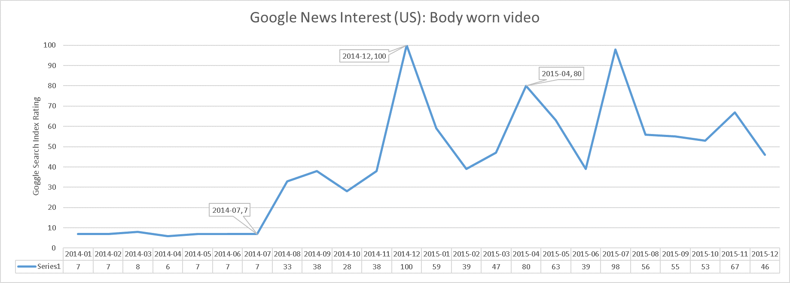
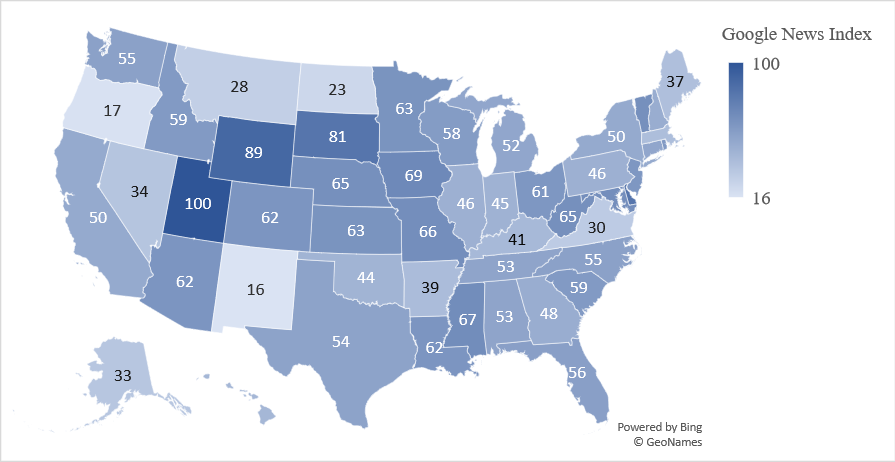
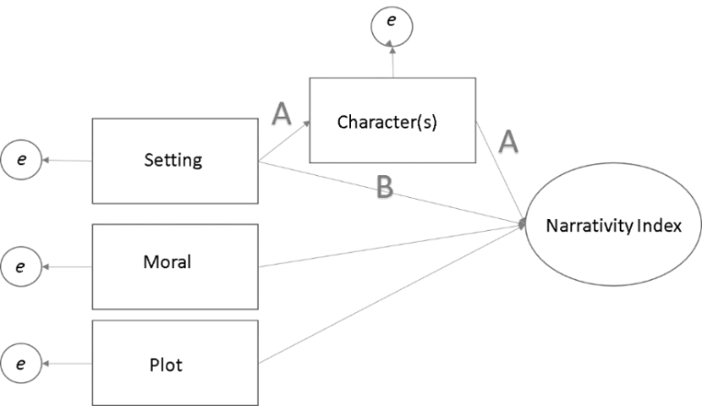

Chapter 6 American Politics: Real Exams & Answers
This chapter is constructed around PA themed questions. The questions you encounter will by nature not be exactly the same as these, or other previous comprehensive exams, even within your own program. There is always at least a little variability. Therefore, I suggest students construct a variety of written answers that are built around themes. These themes are common to the study of public adminsitration, and generally will hold across academic contexts.
Like the public adminstration exam, this American Politics exam was structured with a single required question, and two optional questions. The required question is a good lesson in one of the folly’s of pre-writing, or at least of thinking you’ve pre-written “enough.” The question was new, meaning it hadn’t ever been asked of students before. I loved it though, it was intentionally written to allow students to connect their own research agendas to the larger field of American politics. This is a critical skill for junior scholars to learn, because eventually you will have to take your own research and try to get it published in a journal. At that time, you will need to clearly communicate why your research belongs in this particular journal, in this particular subfield!
This chapter and its answers will probably be more useful once you’ve perused the themes in the American Politics Pre-writes section.
6.1 Required Question:
Every year, a great deal of scholarly research is published in the field of American politics. Based on your knowledge of the field, what topic in the study of American politics do you regard as being important and yet understudied? To respond to this question, identify at least one topic in American politics that you believe deserves more scholarly attention. Explain what research scholars have done that is related to this topic and why more research ought to be done on this topic. Also, explain what theories or approaches would be the most helpful in developing an explanation of this topic as well as what research strategies would be best suited to helping scholars learn more about this topic. Finally, explain how more research on this topic would help to better inform our understanding of American politics in general.
6.1.1 Policy & Evidence Disconnects: The Case of Body-Worn Cameras through the Narrative Policy Framework
The linkage between policy and evidence is not well understood in American politics. Why is it that some policy proposals with substantial scientific consensus are ignored or met with strong opposition? Alternatively (and more in line with the substantive concern for this essay): How do some policies with little to no evidence, or evidence contradictory to the aims of the policy, pass into law with little opposition? These mirrored questions are essential to the study of American politics because they impinge on so many of the most salient public policy questions of the day, including climate change, health care, and criminal justice.
There are many traditional ways to begin answering this question. A likely candidate is that Americans are only boundedly rational (Jones, 2002; Daniel Kahneman, 2003; Shannon, McGee, & Jones, 2019; Simon, 1972), and not able to effectively perceive, process, and take action on complicated policy problems. Perhaps Americans simply do not have enough political knowledge to participate effectively in public policy (Campbell, Converse, Miller, & Stokes, 1960; Delli Carpini & Keeter, 1996). Alternatively, maybe there are structural and wealth inequalities that skew the possibility of policy change (Bartels, 2010). It could be that collective action problems are challenging to address with traditional state institutions (Ostrom, 1990). Or are we wrong to even conceive of a state that takes on these problems, and wary about technocratic state planning (Scott, 1999), we require an administrative retreat to a night watchman conception of our nation’s administration (Nozick, 1974)?
Political science offers a wide range of possibilities, and the previously recounted candidate answers are easily identified due to the vast amount of political research already complete, often in the very policy areas already identified – climate, health, and crime are perennial favorite targets to aim our political theory big guns at. Yet, in the end, a substantial body of literature does not bring generous answers. This essay will not solve the question in full, but in the best scientific tradition will engage with a small but substantive policy area through a modern theoretical framework, the Narrative Policy Framework (NPF), while simultaneously suggesting methodological improvements to that framework. In the end, the essay intends to draw broader lessons about the seeming disconnect of policy and evidence from the exercise by adding in the value of narrative.
6.1.1.1 The Topic at Hand – Body-Worn Cameras
It is on a question of criminal justice that this essay takes as its substantive focus, specifically the rapid adoption of body-worn cameras (BWCs) by American police beginning in 2014. The technology was implemented despite little evidence to support the promised benefits to reductions in use-of-force and increased community support. Moreover, widespread use of the cameras has persisted even as evidence mounts that those benefits are mostly not being attained. This seeming contradiction between policy adoption and policy evidence speaks to the more significant questions posed in the opening paragraph: Why were proponents of BWCs successful despite a lack of policy evidence? What causes BWC policies to persist even when the bulk of scientific evidence suggests they “have not had statistically significant or consistent effects on most measures of officer and citizen behavior or citizens’ views of police” (Lum, Stoltz, Koper, & Scherer, 2019, p. 93)? The answer, I suspect, is in the power of narrative.
The American tale of body-worn cameras begins with an incident for which there was no video. In August 2014, Michael Brown was killed by Ferguson police officer Darren Wilson. In the immediate aftermath of the shooting, witness accounts of the incident were broadcast widely. Horrific stories recounted Michael Brown being shot on his knees, or with his hands in the air, or both, and being allowed to bleed to death in the street for hours, the incident quickly picked up national urgency. Ultimately these stories were found untruthful, but the belief that Michael Brown was the victim of racist police brutality soon turned to rage as Ferguson and nearby St. Louis were the site of widespread rioting and protest. Responding to the crisis, President Obama announced the formation of the President’s Taskforce on 21st Century Policing. The final report of the taskforce (Office of COPS, 2015) called for the adoption of body-worn cameras by policing agencies, and in response President Obama announced federal funding of up to $75 million dollars to assist agencies in purchasing the camera hardware (Edwards, 2015). Importantly, the implementation recommendations and federal funding were well in advance of the empirical evidence to support them. At the time of implementation, there was just one small empirical study, first available in December 2014 (Ariel, Farrar, & Sutherland, 2015).
Rapid adoption followed President Obama’s promised funding, and while estimates are difficult, BWC use at least doubled between 2015 and 2018 (Christodoulou, Paterson, & Kemp, 2019; Lum et al., 2019). A recent review of BWC research concludes that despite high hopes for benefits to transparency and process, over 80 empirical studies show BWCs “have not had statistically significant or consistent effects on most measures of officer and citizen behavior or citizens’ views of police” (Lum et al., 2019, p. 93). This lack of consistent effects, especially on the hoped-for reduction in police use-of-force, begs the question of how such a national policy came to be. If it was not the evidence-based practice (Lum & Koper, 2017; Sherman, 2015) called for by most scholars interested in policing, what motivated the relatively quick policy process that led to such rapid integration of new technology into American policing?
The essay proceeds in five sections, describing a research study that might help us understand how narrative fueled the successful policy implementation of BWCs through federal funding. First is an introduction to the NPF, including the explicit assumptions of the approach. Complementary discussions around media framing and scope of conflict in the policy process give rise to a set of preliminary hypotheses. Second, a sampling strategy is discussed, with attention to the time frame and source material justifications. In the third section, three possible analytic strategies are considered. This section is long, as it traces deep into the theoretical proffer of NPF in order to develop specific analytic tests of implicit assumptions that have not yet been tested. This section offers substantial potential contributions to overall NPF scholarship, as both theory testing and theory building outcomes are possible, or even likely. Finally, a short conclusion considers the development arc of the overall proposal and draws out possible contributions to the broader political science and policy questions that motivate the essay.
6.1.2 The Narrative Policy Framework – Stories Count in Policy
The Narrative Policy Framework (NPF) is the latest approach in the policy process literature to gain significant adoption by researchers. The NPF was developed as a “quantitative, structuralist, and positivist approach to the study of policy narratives” (Jones & McBeth, 2010, p. 330). This policy process approach asserts that “narratives (or stories) are primary mechanisms by which individuals process complex information and communicate about events and issues” (Merry, 2018, p. 749). In other words, the NPF recognizes that the stories people tell, and are told, are critically important to understanding how policy is adopted. NPF scholarship borrows from a wide variety of academic fields including discourse analysis, rhetoric, and critical literature studies (McBeth, Jones, & Shanahan, 2014). NPF builds on what it borrowed, overlaying a structuralist framework to narratives in order to give a common theoretical language for policy scholars.
There are a handful of essential assumptions and research decisions to be made before engaging with the NPF on a research topic, as the approach “is not a one-size fits all for projects centered on narratives” (Shanahan, Jones, & McBeth, 2018, p. 333). There are several strong assumptions built into NPF that must cohere with the aims of the research question before proceeding. The research proposed here meets those assumption, a discussion held for the next section. As full data collection has not yet been undertaken, the focus will be on developing a full research design guided by a research question: How were media narratives deployed in the body-worn camera debates, and to what effect?
6.1.2.1 Narrative Strategies and Hypotheses
Stories count, but how do we count stories? The Narrative Policy Framework (NPF) allows the researcher to go beyond evaluating a news article ‘sentiment,’ a common operationalization in framing studies that can be sensitive to rater bias. For example, for this proposed study, it is less crucial (though non-trivial) to determine whether a document is ‘for’ or ‘against’ BWCs. An NPF study is interested in how that information is transmitted through narrative, rather than if an opinion is transmitted. Through operationalization of characters, setting, and plot, an NPF study can surface commonalities in narratives even when the authors have opposing views. Stories are either told well or poorly, and investigating the differences in how stories connect to policy is the goal.
The five assumptions of the NPF are worth making explicit (McBeth et al., 2014). First, the approach assumes that the policy reality we perceive is socially constructed, rather than objectively true. This assumption reflects the influence of Schneider and Ingram’s (1993) Social Construction of Target Population (SCTP). Second, NPF scholars recognize that socially constructed policy realities have meaning that necessarily varies, but in boundedly rational ways. Narrative meaning has stability over time, can be measured, and is not random – an assumption that has yet to be tested, and which I address at some length in the analytic plan section of this paper. The third assumption is that narratives have a general structure that can be identified, such as including characters and plot. The fourth assumption is that narrative has effects at multiple levels (micro, meso, and macro) and that narrative interacts across these levels. The final homo narrans model of the individual can be considered a meta-assumption. Homo narrans assumes that narratives play an important role in how humans understand the world. In other words: “people prefer to think and speak in story form” (Shanahan et al., 2018, p. 333).
As noted above, the NPF includes three levels of analysis – the micro, meso, and macro. The micro level is concerned with the effect of narrative strategy on how individuals perceive policy choices (McBeth et al., 2014). The meso level is focused on broader narrative strategy by policy actors, and understanding how those actors build those narratives. This is the level of analysis of the present study. Finally, a macro level of analysis is proposed by the NPF, though at this time no published work operates at this level. The macro level has also been synonymized with “meta-narrative, grand narrative, and master narrative” (Shanahan et al., 2018, p. 341).
A structuralist approach attempts to surface the essential elements of a narrative and make them quantifiable. The structure defines a narrative as having four core elements – setting, characters, plot, and a moral. A setting is the policy context that a policy problem is situated in: the “legal and constitutional parameters, geography, scientific evidence, economic conditions, agreed-upon norms, and other features” that constitute the policy arena (McBeth et al., 2014, p. 228). NPF requires at least one character, but this is a minimum requirement and is almost always surpassed. The characters in NPF can be victims, heroes, or villains, and importantly for this study, need not necessarily be human characters as “non-human characters retain their character status in most NPF applications” (Shanahan et al., 2018, p. 335). The plot in policy narratives has a beginning, middle, and end, and serves to connect the characters to both each other and the policy problem. Finally, policy narratives need a moral, which serves to promote a particular policy solution favored by the coalitions promoting the narrative.
6.1.2.2 Framing Effects in Media
The study of framing effects in media has a long research tradition, and the findings are essential for understanding why media narratives are an appropriate source of data in NPF studies. The choices made in narrative structure by policy actors are communicated through the media, and “reflect embedded policy beliefs and strategies that seek to influence readers’ policy preferences” (Shanahan, McBeth, & Hathaway, 2011, p. 378).
The linkage between framing and narrative policy analysis is the importance of story in both. However, more needs to be done to understand how the two frameworks intersect (Jones, 2018). The most common understanding of framing comes from Gamson and Modigliani (1987, 1994), who define frames as the “central organizing idea or storyline that provides meaning to an unfolding strip of events, weaving a connection among them.” Frames are communicated by many sources, but mass media is a key actor in this process (Scheufele, 1999; Zaller, 1992).
How members of the public form opinions has been a consistent source of scholarly work from the earliest days of political research. The consensus emerged that the ideal of high-quality opinion is “stable, consistent, informed, and connected to abstract principles and values” (Chong & Druckman, 2007c, p. 103). This ideal is rarely found among the general public. Because people are not capable of perfectly locating, absorbing, understanding, or recalling information (Simon, 1972; Zaller, 1992), they rely on information shortcuts in forming opinions. They use frames to develop “a particular conceptualization of an issue” (Chong & Druckman, 2007c, p. 104).
In 2015, as funding implementation decisions were considered, the question of BWCs did not break down into a partisan policy question. Elite policy actors from across the political spectrum supported adoption of the cameras. President Obama, a Democrat president, supported BWCs and matched his vocal support with millions in federal funding to police agencies to purchase the technology (Office of Public Affairs, 2015). Donald Trump, then a Republican primary contender, supported BWCs and believed they “can solve a lot of problems – period” (Jacobs, 2015, para. 3). Hillary Clinton, Donald Trump’s eventual opponent in the 2016 presidential race, agreed, making federal funding of BWCs a key point of her criminal justice policy platform (Clinton, 2015), and she stated BWCs were capable of “improving transparency and accountability” (Laughland & Gambino, 2015, para. 11).
Bipartisan agreement on a significant policy proposal is rare enough and rarer still in a period of increased partisanship during a presidential campaign. However, this does not mean media framing is not a factor in the BWC policy story. In their analysis of Newsweek stories from 1975 to 2008, Wagner and Gruszcynksi (2016) show that framing tends to affect attitudes towards policy but not partisanship. As such, bipartisan support of widespread use of BWCs serves as evidence of a policy topic on which attitudes can be affected, even when no partisan differences are implicated. Non-competitive environments are the area where most is known about framing effects, while research into how framing works in competitive elite environments lags behind (Chong & Druckman, 2007). While this is a deficit in the broader framing literature, it does not impact this study of narrative effects on BWCs policy, which was situated in a non-competitive, non-partisan context.
Policy process theories have long been concerned with the role of public opinion on policy formation. The advocacy coalition framework places policy belief as a core component of analysis (Jenkins-Smith, Silva, Gupta, & Ripberger, 2014). Similarly, scholars working in the punctuated equilibrium approach generally follow Kingdon’s (1995) conceptualization of the media’s effect on public opinion through agenda setting. In this view, the effect of the media is most potent at the agenda-setting level, rather than on individual-level policy preference. In other words, media effects are rarely expected to change individual opinion on policy preference. Instead, the media acts to constrain policy choices through agenda-setting effects. In an alternative theory of the policy process, the advocacy coalition framework (ACF) originally conceived of public opinion as an unimportant force within policy subsystems (Sabatier & Jenkins-Smith, 1993), while the opinion of political elites was the center of subsystem power. This early view has evolved. Depending on the policy context, public opinion can play a central role as an external shock to coalitions within the subsystem, or even as an internal force (Shanahan et al., 2011).
6.1.2.3 Scope of Conflict
NPF proceeds from the assumption that public opinion, at the least, plays a part in policy formation, and that opinion is affected through media framing. The framework differs in focus however, as it seeks to quantify not whether media narrative framing is important, but rather how it is done (McBeth et al., 2014). At the meso-level, a strategic reason that policy actors leverage narrative is to either expand or constrict the scope of the policy conflict (Olson, 1965).
Long understood as a political strategy (Schattschneider, 1960), in NPF the scope of conflict is conceptually understood as “a narrative strategy that distributes the costs and benefits of a proposed policy to the array of characters in the policy narrative” (Shanahan et al., 2018, p. 337). The dominant group benefiting from the status quo policy environment will generally attempt to limit the scope of conflict, while the policy coalition or actors who perceive themselves as less powerful will attempt to expand the scope of conflict. The winning coalition is generally the one that is most successful in concentrating the costs (typically on the villain) while diffusing the benefits.
In Professor Merry’s research on narratives in gun control policy advocacy organizations (2018), she notes the link between social construction policy theory (Schneider & Ingram, 1993) and the NPF. Merry predicts that policy advocates will select and construct characters in their narratives in order to influence how a policy issue is framed. In other words, policy actors will use policy narratives to “evoke sympathy” and “might highlight victims who are positively constructed, such as children” (Merry, 2018, p. 751). This is another tactic in an overall strategy of conflict expansion, as actors seek to grow their coalition by appealing to compassionate onlookers by highlighting positively constructed victims.
A second conflict expansion strategy is when actors seek to translate a “public problem into a personal threat” (Goss, 2010, p. 107) by increasing the perceived proximity of a problem for the reader. This strategy is intended to bring in support from those who might otherwise feel a policy issue does not affect them. Proximity can be literal, in which the study would expect actors to highlight a problem in the community of the intended audience. It can also be figurative, in which “framing choices evoke a feeling of closeness to a problem” (Merry, 2018, p. 750).
In the context of BWCs, we might expect to see that a pro-BWC coalition would seek to expand the scope of conflict. By constructing narratives that provide diffuse benefits beyond the specific victims, and simultaneously concentrate costs on the villain, a pro-BWC actor would theoretically have a better chance at ‘winning’ the policy fight. In opposition, an anti-BWC actor is predicted to construct a narrative which concentrates (or even eliminates) the benefits of a policy change on a limited number of victims, while simultaneously telling a story that shows how the costs will diffuse broadly.
These conflict expansion expectations give rise to a set of related hypotheses regarding how BWC policy actors will communicate narratives around the technology:
Hypothesis 1A: Policy actors engaging in conflict expansion will focus on positively constructed characters such as children, and/or downplay negatively constructed victims and criminals.
Hypothesis 1B: Policy actors engaging in conflict containment will downplay positively constructed characters such as children and/or focus on negatively constructed characters such as criminals.
Hypothesis 2A: Policy actors engaging in conflict expansion will focus on characters with high perceived proximity and similarity to the intended audience.
Hypothesis 2B: Policy actors engaging in conflict containment will focus on characters with low perceived proximity and similarity to the intended audience.
6.1.3 Sampling Strategy
Researchers using the NPF are urged to “be transparent regarding how you choose to bracket the time-span of your narrative data collection” (Shanahan et al., 2018, p. 341). Narrative analysis is time-consuming, and often the volume of information to be coded is such that “a random sample may be more feasible” (Shanahan et al., 2018, p. 339). This proposal constrains the amount of information by reducing the time frame of interest, and by examining only articles from the New York Times newspaper. The justification for the decision is based on a review of BWC stories and by a review of general public attention to the issue. The process by which I came to justify this sampling decision is worth describing in more detail.
6.1.3.1 Narrative Source & Time Frame Justification
Media reports are among the most common source of narrative data in NPF studies (McBeth et al., 2014; McBeth & Lybecker, 2018). Media accounts, including newspaper articles, often contain “embedded policy beliefs and narrative framing strategies,” meaning they do not just convey factual information, but instead act as “more of a contributor than a conduit in the policy change process” (Shanahan, McBeth, Hathaway, & Arnell, 2008, p. 115). Newspaper stories and editorials are a common source of data in NPF studies (McBeth & Lybecker, 2018; Shanahan et al., 2008), and more generally across social science studies interested in media effects (Edy, Althaus, & Phalen, 2005; Lecheler & de Vreese, 2012; Matthes, 2009).
In an initial review of BWC news articles, I identify two important dates. First is the fatal shooting of Michael Brown by police in Ferguson, Missouri on August 9, 2014. This was one of the “watershed moments in American policing” (Lum et al., 2019, p. 2) because it was in the aftermath of this event that President Obama and other influential policy actors began to speculate that if there had been footage of the incident, perhaps the civil unrest which followed could have been avoided. In response to widespread concern, President Obama announced the creation of the President’s Taskforce on 21st Century Policing (President’s Task Force, 2015).
The second critical date happened in May 2015, when President Obama announced that the US Justice Department would begin making up to $75 million in federal funding available for local police departments to purchase BWCs (Funk, 2016). This announcement was in conjunction with the publication of the task force findings (President’s Task Force, 2015). President Obama stated BWCs would “enhance the trust between communities and police” (Funk, 2016, para. 28). By September, the funding program had already distributed nearly $20 million to police departments (Office of Public Affairs, 2015), and a survey of police chiefs and sheriffs the same year showed that up to 96% planned to implement BWCs within a year (Lafayette Group, 2015). Exact adoption statistics are not available, but scholars believe that has at least doubled since 2013 (Lum et al., 2019).
Following another NPF study using newspaper articles (McBeth & Lybecker, 2018), I use Google Trends to map general public interest in body-worn video and identify general interest spikes. Google Trend data measure individual searches of specific words or phrases. This measure correlates well with more traditional measures of public attention, such as the use of New York Times story counts (Ripberger, 2011). The Google Trend search was specified to only capture “news” interest as opposed to “general” or “picture” searches. This search strategy allows the study to target general public interest in news about body cameras, rather than web searchers merely interested in what a body camera is or looks like. The Google Trend search results are reported in two figures, and both provide focal information for this research.
Figure I: General News Interest in ‘Body Worn Video’ 2014 – 2015

Before August 2014, search interest was never higher than a ‘7’ in Google Trend index. However, as shown in Figure 1 (above), in August 2014 (the month Michael Brown was shot and killed by police) the search interest index measure rises rapidly. The index peaks at a ‘100’ measure in December 2014, when President Obama announced he would seek federal funding for body cameras. The President confirmed the funding, as well as the results of the President’s Taskforce on 21st Century Policing (which highlighted BWCs) on May 1, 2018, and the chart shows heightened public interest in body camera news in the months before his announcement. Thus, the data shown in the figures support the time frame selected as well as the use of newspaper articles for the study.
Figure 2: General News Interest in ‘Body Worn Video’ by State, from 8/1/2014 – 5/1/2015

Figure 2 (above) shows Google Trend information by state for the period between August 2014 and May 2015. The mean index score across states is 53.5, indicating broad national interest in body-worn video. Further, the interest is relatively well dispersed, though some outlier states are present. This information supports the selection of a nationally important paper such as the New York Times.
Not all newspaper content is appropriate for narrative analysis, however, so it is “critically important to apply NPF’s definition of a policy narrative to these texts to determine inclusion and exclusion in your sample” (Shanahan et al., 2018, p. 341). An initial Google search of the New York Times, a national paper of record in the United States, reveals that 47 articles during the specified period of August 1, 2014, to May 30, 2015, are related to ‘body cameras.’ As an initial corpus, this is manageable enough to examine all articles returned in the search, rather than sample from them.
6.1.4 Analytic Strategies: Stews, Baking, and Structural Equation Models
In a recent review of progress in NPF studies, Jones (2018) highlights the relative sameness in NPF research designs. The standard NPF analytic method is a mix of descriptive statistics and measures of association, “and, of course, plenty of regression analyses” (Jones, 2018, p. 734). This analytic monotony is a reasonable early feature as scholars attempted to build out the framework. Recently, NPF scholars have begun to broaden the analytic scope, with the use of rare event analysis (Kirkpatrick & Stoutenborough, 2018) and causal mediation analysis (Zanocco, Song, & Jones, 2018). Network analysis and in the inclusion of big data have been suggested as potential next steps for researchers looking to expand the analytic toolkit of NPF (Shanahan et al., 2018). For this study, and with the goal of expanding the useability of NPF for the study of American political science, I propose a further way to contribute to the testing of the NPF through the inclusion of structural equation modeling (SEM).
While SEM is capable of directly testing the same null hypothesis as logit regression, it can also test hypotheses constructed to test indirect paths of causation. Indirect causation is an especially salient question for NPF, which assumes that narrativity is a dynamic process, but which is generally only tested in a linear regression formulation. Those tests assume a closed causal space and one-to-one interactions on the causal path between independent and dependent variables. For example, perhaps both heroes and villains are important (a hypothesis supported by current NPF theory), but that narrativity increases only when a villain is accompanied by a hero. This logic is an example of a dynamic process that is well-fit to SEM.
6.1.4.1 Structural Equation Modeling (SEM)
Regression methods are hampered by the inability to easily identify measurement error. This is a salient problem within the social sciences broadly, but specifically for research within the NPF framework, which relies on data collection techniques that are vulnerable to bias. Structural equation modeling (SEM) is a second-generation statistical technique that allows for both identification of measurement error (and therefore, correction), but also takes into account the indirect effects of endogenous variables within the model (Kline, 2015). These analytic benefits make SEM a “significant and indispensable tool for empirical researchers” (Tarka, 2018, p. 338), and the method is widely applied across scientific disciplines.
Taking an SEM analytic approach to an NPF study has several identifiable benefits. First, one assumption of linear regression is that the explanatory variables are independent from one another. Because NPF assumes the narrative elements are not only related but dynamic, regression is, at a basic level, an inappropriate test for NPF models. SEM can handle non-independent causal variables, a clear advantage in this case.
The second advantage of SEM is related to measurement error. Researcher supplied measurement error is unavoidable in a method such as NPF. This bias is baked into the very assumptions of the approach, especially the homo narrans base of the approach. Stories universally influence how humans (including the researcher subgroup of humans) perceive and understand their world. This influence can lead to inter-coder bias as data collection proceeds. Even an experienced, careful researcher coding the narrative content of newspaper stories is likely to (at a minimum and in the best case) supply a bias in how structured narrative content is encoded.
Intercoder reliability is no balm either and may actually exacerbate measurement bias. For example, a graduate student or research assistant can reasonably be assumed to harbor the same rating bias as the principal researcher who trained them. In such a case, high intercoder reliability can be interpreted as highly reinforced systemic mismeasurement. While SEM does not magically do away with mismeasurement, the relaxed assumptions and ability to measure latent error could be useful in the specific case of narrative content.
Finally, SEM’s use of latent constructs is an ideal modeling technique to test foundational NPF theory. Latent constructs are a way of measuring the unobservable latent character of complex social phenomenon. Any particular question or observable item is subject to bias and mismeasurement, and does not capture the full meaning of a social phenomenon. However, through the use of several observable measures, each of which captures an aspect of the overall unobservable latent character of the phenomenon being studied, a researcher can be more assured of the validity of the overall measure.
6.1.4.2 Applying SEM to the NPF
What constitutes a policy narrative? In the specific case of NPF, narrative is the unobservable social phenomenon, and SEM offers a unique contribution to both the overall framework of the NPF approach and the policy process theory environment as well. The framework assumes this unobserved narrative is comprised of several underlying, unordered, but observable constructs – the four core form elements of setting, characters, plot, and moral. The elements come together to form a ‘narrativity index.’ The index is assessed to “understand the robustness of any given narrative or set of narratives” (Shanahan et al., 2018, p. 337). Importantly, “the effect of higher or lower narrativity is yet to be known” (p. 137).
I suggest an analytic pause before turning to assess the effect of narrativity, and a step back to assess what is even meant by ‘index’ in this context. The implicit assumption is those narrative elements are not only essential, but essential at the same level. The plot, therefore, is just as critical to narrativity as moral, characters, or setting. Perhaps, but this far from settled within the NPF literature, as indicated by the advice that “policy narratives may include all or some narrative components” (Shanahan et al., 2018, p. 336).
The implied index formulation is akin to a stew recipe, where the overall outcome is relatively invariant to the order, amount, or prevalence of ingredients. Scholars generally agree that at a minimum it must have at least one character and refer to public policy, but past this minima, the recipe is a dash of plot, a dollop of other characters, the juice of a setting, and a smidgen of moral as needed. Continuing the metaphor (perhaps a bit too far): if NPF is to enhance the replicability and rigor of a ‘narrativity index,’ then it needs a baking recipe, with more exactitude in types, amounts, and timing of the ingredients.
In the grammar of SEM, this narrativity index recipe forms an implied covariance matrix. A diagram of the implied covariance matrix would appear as shown in Figure 1 below. In the diagramming syntax of SEM, an oval shape is a latent construct, rectangles are observed items, and small circles are error terms for observed items . Directional arrows from observed items to latent constructs denote a regression-like relationship. Following model resolution (discussed below), path coefficients would be calculated for the weight of each observed variable on the latent construct. These coefficients can be interpreted much like linear regression coefficients. They can denote a positive or negative relationship, and each path can be significant or non-significant at an alpha level specified by the researcher. In the ideal case, each path in this test would be significant and in a positive direction.
Figure 3: Base Implied Covariance Matrix for the ‘Narrativity Index’
Importantly, Figure 3 should not be construed as representing the only implied covariance matrix implied by the NPF approach. However, it is the most likely ideal type, given the current assumptions and structural considerations of NPF. The NPF is “open to alternative definitions operationalizing the structures of a policy narrative” (Shanahan et al., 2018, p. 335), and so alternative model specification is possible. However, given that even the base NPF model has not been tested in this way, at this time the four core elements of narrativity are adequately encoded in the first diagram. It is straightforward to consider and diagram a multiplicity of other models of narrativity which take into account the possibility of indirect relationships. For example (Figure 2): What if variance in setting strengthens or weakens the influence of a character type on how robust a narrative is (indirect path ‘A’), while simultaneously exerting a direct influence (path ‘B’) on narrativity as well? SEM is able to solve these equations simultaneously in the implied open solution space.
Figure 4: Hypothetical Indirect Implied Covariance Matrix

Recall that the NPF explicitly assumes bounded rationality in narratives. This assumption suggests that narrative has stability over time, can be measured, and is not random. Another way of describing that stability of measure is ‘measurement invariance’ (Nesselroade & Cattell, 2013). A full discussion of measurement invariance is beyond the scope of this paper. However, the key idea is that by modeling datasets from a variety of times, contexts, and sources, we test the underlying model for measurement artifacts. This provides a check that any change we are seeing in the model output is due to actual underlying changes in the data, rather than some other source (Boker & Laurenceau, 2006; Newsom, 2015). Academic psychology pioneered much of the work in longitudinal modeling to detect measurement variance at the inter- and intra-individual level of measurement (Nesselroade & Baltes, 1979). The application of SEM to the problem of measurement variance is considered state-of-the-art methodology (Deboeck, Nicholson, Kouros, Little, & Garber, 2015). Relatively few published articles consider measurement invariance testing directly, beginning around 2011. In the case of testing NPF models of narrativity, SEM techniques can ensure measurement invariance (or diagnose variance) by conducting a series of tests that impose equality constraints to establish parameter stability. If done well, this could result in a genuinely reliable narrativity index which far surpasses the current ‘stew stage’ of recipe development.
Note that Figure 4 above does not require a change in variable or operationalization of the model shown in Figure 1, though a hypothesis reformulation is likely required. SEM is imbued with natural flexibility that allows the researcher to consider a wide variety of narrativity index models. Further, once a likely candidate model is identified, it can be tested across policy contexts. If the model holds, we can begin to isolate the relative weighs of each component and path, allowing for even more theory building. For example, it may be characters (or plot, or setting) are ‘worth’ more narrativity. In that case, experimental designs with narratives designed with more or less robustness (macro level) could be tested for their (micro-level) effects on the formation of policy belief in individuals. However, this is now far afield in the what-if scenarios, which all hinge on first establishing configural validity for the basic model illustrated in Figure 1.
6.1.4.3 Drawing Conclusions (from drawings)
Several conclusions might follow the above analysis, which is a type of confirmatory factor analysis (CFA). First, the observed covariance model could obtain close fit with the implied covariance model. In this case, the structural elements of narrativity would be shown to be in accordance with NPF assumptions. This outcome is the most likely, given that the structural elements of NPF are the result of careful research which has been developed by talented scholars for many decades. The NPF was, at least in part, developed with the transparent goal of meeting policy process scholar Paul Sabatier’s requirement that a theory possess a clear model specification and be “clear enough to be wrong” (Jones & McBeth, 2010; Sabatier, 1999; Shanahan et al., 2018, p. 332). Having only recently being accepted into a prominent policy process handbook (Sabatier & Weible, 2014), the approach detailed here offers a real possibility for method triangulation in support of the still-growing NPF.
Alternatively, if the two covariance structures are incompatible, essential assumptions of the NPF approach can fairly be said to have been falsified. In that case, assumption three of the approach would require significant interrogation. Assumption three is that narrative has generalizable structural elements, and building on that assumption NPF models the four core elements of plot, setting, characters, and moral as the quantifiable elements. To undermine that construction would be to undermine foundational aspects of the NPF. However, before drawing such a damaging conclusion, the limitations of the analytic tests should be assessed. For the purposes of this essay, I avoid a full limitations discussion reluctantly, but note that poor model fit, weakness in the implied model, and a lack of narrative comparisons all pose threats to potential findings in the proposed research. These are only three limitations that would have to be considered and are not intended to be an exhaustive list. Applying and testing the NPF is “more of an iterative venture, with some ideas developed concurrently and not necessarily bound” by unyielding order (Shanahan et al., 2018, p. 333). In that spirit, the identified limitations at this proposed stage are likely to be joined by others as the research process takes place.
6.1.5 Conclusion – Counting Stories in Policy
This essay has structured a research approach to understand better the narrative content of stories that lead to policy implementation. In the abstract, this improvement could lead to better construction of stories in other policy arenas. The empirical evidence was unimportant to the politics of passing BWC policy, and appears unimportant to the persistence of the policy. To state it as such is not to stand in judgment, but as an observation of the human realities surrounding policy. It may be that in other policy arenas, there are similar pathways to implementing policies that have otherwise remained stuck. Policies aimed at combatting climate change might benefit from better narrative, so might health care, drug policy, or criminal justice proposals – the possible policy list is long. Political scholars with decades of domain expertise are often unable to explain why their exquisite empirical models are not met with policy success. The NPF is one promising avenue to connecting research to policy outcomes. Applying new methodology, or as stylistically applied here, an improved method of ‘counting stories,’ will solidify the usefulness of NPF, which in turn will help illuminate the motivating questions of how evidence and policy formation interact. Body-worn cameras are just one small example of a policy that was successfully implemented despite evidence, and persists in the face of contradictory evidence. The narrative of abhorrent police brutality matters a great deal to how we construct public policy around policing and use-of-force.
To its credit, and in contrast to many of the other policy process theories, NPF makes its explicit assumptions clear. Implied, or at least rarely stated assumptions still exist. Perhaps the most untested of the implied assumptions of NPF is that of dynamism. Story elements of plot, characters, setting, and moral are all assumed to interact in some way to produce an index of narrativity (Shanahan et al., 2018, sec. 6.1.4). The same fluidity is presumed for the narrative levels, as micro-, mes0-, and macro-level narratives interact with and reshape one another. As demonstrated in the exploration of possible analytic strategies undertaken here, more effort should be given to testing that assumption. Stories count; this is the homo narrans assumption of narrative influence on human activity. The NPF has been successful in providing structure to the assumption such that the relationship between narrative and policy can be assessed. NPF synthesizes the quantitative demands of policy process scholarship with the qualitative instincts of social inquiry interested in meaning-making. To date, the burgeoning NPF evidence base has demonstrated its value to our overall understanding of the policy process. In order to build on the early success of the NPF, I have suggested an analytic expansion is needed to provide clarity and falsification of untested assumptions related to how the approach conceives of a ‘narrativity index.’
The NPF’s ‘front-end’ of demonstrating that ‘stories count’ is more well-developed than the analytic back-end of ‘counting stories.’ This critique is not intended to underplay the contributions of NPF scholars or scholarship. Theory ought to be grounded in description before it stretches to inference. It is only due to the determination of early NPF researchers that any demand for more theory testing can be made, as has been done here.
6.2 Optional Question 1
One prerequisite of a functioning democracy would seem to be that average citizens know enough about their own policy preferences and the political system to participate in politics in a meaningful fashion. Yet, many studies of American citizens cast doubts about how much Americans know about politics or even how firmly they hold their own opinions. Based on the scholarly research, what would you conclude about how well the average American is able to participate effectively in our political system?
6.2.1 Americans Know Enough: Political Knowledge, its Origins and Outcomes
Questions about how citizens develop their basic political beliefs, perceive political issues, and participate in the political process are at the heart of the study of American political behavior. In the democratic ideal, the citizen is a well-informed participant in the political realm, able to effectively consider a wide-range of information about a wide-range of topics and distill that information into a well-reasoned act of political participation. However, this normative ideal is loaded with assumptions that are worth testing empirically.
In Public Opinion and American Democracy, V.O. Key emphasizes the important link between political participation and the ability to influence government action, insisting that “Unless mass views have some place in the shaping of policy, all the talk about democracy is nonsense” (Key, 1961, p. 7). But how does the average citizen form the views necessary to shape their democracy? Do they know enough to shape it effectively?
This essay reviews how scholars have attempted to address questions about what Americans know about politics and their ability to participate effectively as political citizens. It begins with the first sociological approaches to political learning, follows through to the theories of political cognition which gained supremacy following the theoretical and empirical failures of the sociological approach, and moves to a review of Zaller’s (1992) model of political belief formation and Delli Carpini and Keeter’s (1996) examination of the stratification of political information in the American public. Following that review of the most established findings on political citizenship, I review recent lines of scholarship that have begun to call into question a long held belief in American behavioral research, that Americans are generally ‘ideologically innocent’ (Converse, 1964), which set an early scholarly expectation that Americans do not know enough to manage their democracy well. Finally, while the essay mainly draws from the behavioral approach to American politics, in the closing section the connection from behavior to institutional scholarship is made clear with examples from presidential (Skowronek, 1997) and legislative (Lee, 2009) studies. In closing, I conclude that Americans know enough, and that our democratic experiment has certainly survived generations who knew less.
6.2.3 Political Cognition
Whereas political socialization asked how people formed their beliefs as they approached adulthood, the question of how American’s think about politics was still left unanswered. This became the central question motivating the scholars studying political cognition. In this field, the field of political science has been closely following the ideas best set out by Converse (1964). This theoretical line operates from a base assumption that voters have clear ideological positions (Downs, 1957), but update the earlier theories to better understand how voters make decisions on candidates and political issues. These theorists believed that for the vast majority of issues, voters can use ideology and partisan identification (Green, Palmquist, & Schickler, 2002) as a shortcut to determine their views fairly quickly even when they are not in possession of deep political knowledge themselves (Lupia, 1994). Converse undermines that assumption, and studies how Americans use and conceive of ideology. Overall, he concludes citizens do not clearly grasp ideology, nor do they use it effectively to form preferences. Instead, Converse argues that while elites have something resembling a consistent ideology, most American’s inconsistent, a feature of the electorate he famously called an “ideological innocence.”
With Converse finding that most Americans don’t have ideological principles from which their political beliefs follow, where those beliefs originate? This is where other political scientists pick up the argument. Feldman (1988), for example, tests an alternate theory that in the absence of ideology, people use value systems to form beliefs. Again though, the empirical evidence did not support the value theory.
Lodge and Hamill (1986) provide the model that in many ways supplanted the sociological tradition. They borrow heavily from theories in psychology (Kahneman & Tversky, 1984) and make the basic assumption that people are “cognitive misers” who operate in a very complex political environment with too much information to process fully, and so they want to make decisions as simply and easily as possible. Lodge and Hamill theorize that people use partisan schemas to handle most political decisions, with these schemas making complex political information easier to process, a form of heuristic thinking. The problem for these schemas becomes confirmation bias, as people tend then to dismiss information that does not fit easily with their already held notions, while simultaneously adopting information that confirms those same notions. A second outcome of this theory is the problem of heuristic processing, which occurs as people make errors and begin to fill in information that was never actually there. These problems leave the possibility of belief change somewhat unexplainable, short of massive exogenous shocks to the schema through overwhelming new information.
Recent advances in measurement and a Bayesian view of belief updating suggest that the threats of backlash to non-conforming information is overblown, and that when confronted with politically persuasive messages, the receivers of that information update their views in the direction of the persuasion. In other words, “information designed to persuade can and does change minds” and those changes are positive, small, homogenous, and durable (A. E. Coppock, 2016, p. x). However, partisan schema theories continue to be explored in the literature, and Lodge and Hamill’s contribution has been long lasting. Their work also shows the beginning of a shift in methodology in political science, as they use experimental research methods, as opposed to the pure survey research that had dominated the field to that point.
Arthur Lupia uses his (1994) “Shortcuts versus Encyclopedias: Information and Voting Behavior in California Insurance Reform Elections” to address some of the problems with partisan schema theories. Lupia demonstrates that low information voters don’t have to be perfectly informed information depositories (encyclopedias) in order to mimic the political decisions of their better-informed counterparts. Instead, the low-information voters use information shortcuts, such as third-party endorsements of political positions and candidates, to form their opinions. This allows them to mimic the votes of the better-informed voters.
Notions of information processing and heuristics has become a well-established theory in American political behavior. It probably provides a more realistic reflection of how American’s actually behave and operate in a complex political environment. Some problems remain, however, including problems of bias confirmation. Taber and Lodge (2006) address this problem with their model of motivated skepticism that helps explain when and why citizens are biased-information processors. Using a Bayesian-inspired information processing frame, they find evidence that those citizens who are the most politically sophisticated and with the strongest levels of prior belief are most subject to errors induced by confirmation and disconfirmation bias. The authors key argument is that most people are simply unaware of the strength of their own prior beliefs, and that these priors dictate to a large degree how citizen’s process information. Bolsen, Druckman, and Cook (2014) add to this literature, by examining the motivation process in how people form their political opinions. Their finding is that people are indeed biased processors of information, particularly in the context of in-party and out-party endorsements. The authors predict their finding “will be troubling to people who worry that partisan motivated reasoning leads to lower quality opinions due to dogmatism and inflexibility.”
6.2.4 Understanding Mass Opinion
In some ways, John Zaller can be seen as modernizing and updating the The American Voter (Campbell et al., 1960). Zaller’s (1992) book The Nature and Origins of Mass Opinion stands a classic in the field, and is centrally concerned with examining how citizens use mass media information to form political preferences. Zaller gives a good frame for understanding mass political opinion, and on balance the evidence that followed him tends to support his theory.
Zaller provides theoretical grounding that allows for competing considerations to be held by a person at any given time as they confront political choices. He shows that elites do provide information that voters use to construct their own opinions, but that this process is mediated. Voters have a political awareness which filters elite (here, mass media) information in terms of issue salience and consistency. In other words, argues Zaller, voters do not have any single, true, political preference. Rather, voters have multiple political considerations, which he structures in his “Receive-Accept-Sample” model of voter preference. Voters must first receive information, that is they must be made aware of it. Next, the voter must accept (or reject) that information based on its consistency with their prior beliefs. Finally, the voter samples from the most recent information they’ve been made aware of, with the information nearest in time given highest preference.
Zaller uses his model to show that for the most part American’s use of elite cues in the form of political discourse, which they are exposed to by mass media, to form their own political opinions (Prior, 2013). Like Converse, Zaller disabuses political science of the belief that American’s possess consistent political ideology that forms the basis for their political beliefs. But Zaller permanently improved the model by, first, allowing for more sophisticated understanding of what elements the public does use to form political opinions; and second, by illustrating the primary cue for formation of political beliefs originates with exposure to elite discourse on political matters through the mass media. Finally, one of the lasting impacts of Zaller’s work has to raise fundamental questions about what political scientists are really measuring when they survey people’s attitudes (Prior, 2009). Given the importance of recency considerations for voter behavior (Panagopoulos, 2011), we should question the validity of opinion survey measures, as recent political events stand a good chance of having skewed respondent’s reported beliefs and opinions. Zaller’s model gives a good explanation for why people are not consistent in reported opinions over time. Political opinion formation is a dynamic process, and exposure and recency matter. Zaller’s book was impactful upon its release, and has continued to shape the study of American political behavior since.
One example of how Zaller has influenced later research is Matthew Baum’s (2002) “Sex, Lies, and War: How Soft News Brings Foreign Policy to the Inattentive Public,” which helps explain how the media affects what Americans know about politics. Baum shows that “soft” infotainment shows, which regularly cover the big political foreign crises of the day, help shape Americans’ views of foreign policy. This helps explain one of the counter-intuitive findings from Delli Carpini and Keeter (1996) that Americans possess more information about foreign policy than domestic policy.
6.2.5 Political Knowledge and Citizen Competence
Also updating the early Michigan studies (Campbell et al., 1960; Converse, 1964) is What Americans Know about Politics and Why it Matters (Delli Carpini & Keeter, 1996). The primary question confronted here is whether Americans have enough factual information to be able to participate meaningfully in the American democracy. The authors take a view contrary to the political cognition literature, in that they make a strong normative argument that heuristics are not good enough, and that voters need a strong background in meaningful facts in order to properly participate in a democracy.
The main point of the book is that the distribution of meaningful political information is uneven, particularly along dimensions of race and socio-economic status (SES). They find that if a voter is a middle-aged or older white male from the upper half of the SES distribution, that person stands a fairly good chance of having the appropriate basis of political information to participate politically. However, if the voter is, for example, a black woman living in the inner-city and from the lower SES distribution, the likelihood is that she does not possess enough relevant political information to be able to participate politically.
Delli Carpini and Keeter make a strong argument that there are institutional hurdles that are skewing political participation. Their normative statement is that if we are to thrive in a democracy, we must begin to address the structural elements which produce unequal distributions of political information. They do an excellent job of documenting the process by which they came to their conclusions, and make a convincing argument for why we should be concerned about what people know.
However, some scholars would disagree with the stark findings of the scholarship above. Lupia (1994) argues that voters do not need to be fully informed ‘encyclopedias’ in order to vote, and that less-informed voters use information shortcuts to vote in ways very similar to their better-informed counterparts. Lupia uses empirical evidence from a California initiative on insurance reform, a topic that most typical voters will have very little information about. Low-information voters participate meaningfully by relying to cues from third-parties such as advocacy groups and political parties to form their political opinion, which is then translated into voting that is not dissimilar to those who spend much more time delving deeply into political issues. However, this kind of partisan motivated reasoning has been found by other scholars to reduce the quality of political opinions (Bolsen et al., 2014), and to be more shaped by the power of prior belief than the accuracy of new information (Taber & Lodge, 2006).
Americans must make political decisions in a complex, fluid environment, and much of the scholarship which finds lackluster participation and lower political efficacy is based in a somewhat elitist rational choice belief that ‘correct’ participation or ‘incorrect’ voting exists in the first place. Lau and Redlawsk (2006) undermine this assumption. The authors use experimental methods to test four models of how voters process information and make voting decisions. Subjects make voting decisions on hypothetical candidates in a time-pressured environment, and then in the second phase allow those same respondents to collect information for as long as they need before making a voting decision. Subjects who change their vote between the first and second phases are considered to have made an ‘incorrect vote’ in the first phase, while those whose vote is consistent between phases made ‘correct votes.’ They find that in up to three-quarters of the time, their subjects were able to make ‘correct votes’ despite not knowing enough, supporting the typical arguments made by Lupia (1994).
The methods used by Lau and Redlawsk are subject to critiques that their experiments are artificial environments, and so don’t necessarily tell us exactly how voters make decisions in real elections. However, the value of these experimental findings is that they closely mimic the frantic, bounded rationality (Simon 1972; 2000) and heuristic shortcuts (Lodge & Hamill, 1986; Taber & Lodge, 2006) that real Americans in the real world must contend with when making political decisions. In many ways Lau and Redlawsk’s findings are supportive of Lupia (1994) and others who reject the belief that democracy can only function properly when American’s are participating with rational, well-informed political knowledge.
6.2.6 The Electoral Connection and Democratic Effects
Political science scholars have gone to great effort in attempting to locate the effect of public participation and opinion on politics and policy (Verba & Nie, 1972). David Mayhew (1974) produced one of the most enduring theories in the field in his book The Electoral Connection, where he lays out a stark case that only re-election matters to members of Congress (and to some extent, other elected officials). Given that claim, which is still firmly attended to by most, the voting public’s opinions on policy ought to matter a great deal, and their political participation taken to express those opinions as well.
Larry Bartels focuses a great deal of attention on the (in)ability of the public to influence public policy, and the intersections of that inability with inequality, in chapter eight of his book Unequal Democracy: The Political Economy of the New Gilded Age (Bartels, 2010). Bartels’ basic thesis is that economic inequality is growing, and that growth has political, not just economic effects. In chapter eight he presents his findings that economic inequality leads to a lack of representation of the views of low income Americans, and that senators “attach little or no weight to the preferences of low-income constituents” and that the political views of the poorest third of Americans receive “little or no weight in the policy making process” (Bartels, 2010, p. 259).
One might be tempted to simply connect this lack of representativeness back to early findings that lower socio-economic status leads to lower participation (Verba & Nie, 1972; Wolfinger & Rosenstone, 1980): if poorer people vote less, does it not follow that elected politicians would tend to represent the views of poor people less? Bartels shows, however, that the magnitude in turnout differences between rich and poor groups are too small to correlate well with how senators vote against the policy preferences of the poor. In the end, he finds that while affluent Americans can influence the policy process through both direct and indirect processes, poorer Americans are really left only with indirect methods, such as when less-affluent Americans vote as a group in such a way that close elections are decided by those votes. In other words, it is what they earn, not what they know, that upsets the policy electoral connection.
For democratic theorists, there is a normative connection between the two – public opinion ought to affect policy if in fact the polity has control of government (Dahl, 1961). Reflecting that ideal, scholars have attempted to connect Americans’ political participation to the policy outcomes of their government, with mixed success. For many years the literature failed to establish correlation, let alone causation, between public opinion and public policy. But beginning in the late 1980s and 1990s, two primary types of research in this area were established (Monroe, 1998) – studies of ‘congruency’ and those of ‘consistency.’
The classic congruency study uses survey data collected over multiple decades (Page & Shapiro, 1983). The authors use similarly worded questions from across the time periods, and then attempt to correlate policy shifts from before the first time period a question was asked, and after the next time it was asked. Page and Shapiro are able to establish that when a shift in public opinion is detected (they look for shifts larger than 6% in aggregate opinion), there is a correlative policy switch approximately two-thirds of the time. This is a higher percentage than most expected, as most previous research had failed to find any connection between public opinion and public policy. However, given the lack of causal connection the authors were necessarily reserved in their claims.
While Page and Shapiro represent the congruency approach, Monroe (1998) places himself in the consistency camp of researchers, which compares how the distribution of policy outcomes with the distribution of public opinion. Monroe compares two time periods, 1960-1979 and 1980-1993, and finds that in the later period public policy’s consistency with public opinion had dropped from 63% to just 55%. Monroe attributes this relatively low consistency to institutional reasons connected to the inherent bias against change in the American political system. Monroe goes further than Page and Shapiro (1983) by further stratifying his samples of opinion and policy into substantive policy area. This allows Monroe to detect that, for example, in foreign policy, there is nearly 100% consistency between public opinion and policy change. Like Shapiro and Page, though, Monroe’s methods limit him to correlation claims rather than causal ones. In the case of foreign policy, the nearly 100% correlation leads one to believe that at least a significant portion of the consistency is due to policy affecting public opinion, rather than the opposite.
While the majority of research considered here has so far been concerned with national-level issues, Erikson, Wright, and McIver (1989) (1989) offered an interesting variation, locating the discussion in state-level research. The most important finding to come out of this work is that state electoral forces are the most important factor in the correlation – or lack of it – between public opinion and public policy. Using complex path models, they demonstrate that ideological variation between states makes comparisons very difficult - i.e. a Democrat from Alabama is probably more conservative than most New York Republicans. State policy outcomes do represent state opinion preferences, but party control of a state legislature is not a good predictor of state policy, as the party activists and the centrist voter tend to be pulling politicians in different directions than the national party.
6.2.7 Relating Changing American Behavior to Institutions
Recall that the most important early studies of American political behavior came out of the University of Michigan election studies beginning in 1956 (Campbell et al., 1960), and that work continues to motivate and inform a great deal of political research. Much of how we still conceive of political behavior is influenced by those initial studies (Lewis-Beck, Jacoby, Norpoth, & Weisberg, 2008). One of the main findings on public ideological alignment is that Americans generally do not understand the ideological differences that are important to political elites (Converse, 1964). The publics inattention is very high even in moments of great political conflict, their opinions are inconsistent, and do not cohere ideologically. On the whole, Converse concluded that Americans are ‘ideologically innocent.’
However, recent research suggests that the ideological innocence is transforming as more Americans become ideologically sorted, with opinion surveys finding that non-elites are more ideologically aligned and constrained (coherent). Baldassari and Gelman (2008) use National Election Study (NES) data from 1974 to 2004 and find that the correlation between issue attitudes and party identification had grown significantly. In other words, we learn a lot about a voter’s stance on policy issues such as abortion, gay marriage, and social welfare programs simply by knowing whether they identify as a Democrat or a Republican.
But was the finding by Baldassari and Gelman (2008) just a short-term trend? Recent evidence suggests a longer-term trend is in play, as shown by Martin Wattenberg (2019) in his conference paper at the 2019 American Political Science Association’s national conference. Wattenberg finds that the positive correlation trend has only increased in the decade since Baldassari and Gelman investigated it. The percentage of Americans (Wattenberg, 2019, p. 1)“with well-developed belief systems based on a clear understanding of public policy choices has increased substantially” even since 2000, and this increase “accounts for virtually all of the increase in respondents whose partisanship matches their ideology.” Wattenberg traces the start of this increasing ideological coherence to the presidential campaigns of Ronald Reagan, whose presidency was the first (at least in the American National Election Survey era) to (2019, p. 8) “promote a clear agenda that represented a major shift in the course of public policy” issues such as tax and social welfare reductions alongside increased military funding.
Two other research trends support Wattenberg’s belief that we are in an unusual moment in American political behavior, though both supports come from the American political institutionalist camp in presidential and senatorial studies. First is presidential scholarship that shows political ‘paradigms’ tend to dictate presidential leadership and success, rather than innate political skill (Skowronek, 1997, 2008). In Skowronek’s telling, we are still in the Reagan era because presidential candidates still hew closely to the policy issue patterns developed by Reagan. For example, both of our most recent presidents overtly compared themselves to Reagan during their campaigns. For example, Senator Obama in 2008 made the comparison himself during the campaign (Murray, 2008, para. 3):
“I don’t want to present myself as some sort of singular figure…I think Ronald Reagan changed the trajectory of America in a way that Richard Nixon did not and in a way that Bill Clinton did not. He put us on a fundamentally different path because the country was ready for it.”
As a Democrat candidate still engaged in a primary fight, Obama was not campaigning for conservative values. But Obama was a political actor in a still resilient political environment shaped by Reagan, and so while he opposed the political order, he was not able to cast aside the vision of leadership offered by Reagan. The Reagan paradigm is what Skowrownek (2008) would call “institutionally thick,” and sets the terms of engagement for candidates from both parties, and Wattenberg is likely right to frame the increasingly ideological public as beginning with President Reagan.
Further evidence for the findings of Wattenberg (2019) and Baldassari and Gelman (2008) comes from Frances Lee (2009, 2016) in her studies of elite polarization among politicians. Lee notes that we are living in a period of intense electoral competition that skews what is normally expected in terms of ideological polarization. Most of American political history was dominated by one party or the other, and only in the modern era is the partisan competition so balanced that the party in power must be constantly attending to the next election. Tied closely the electoral connection (Mayhew, 1974) but leveraged at the institutional level, Lee sees ideological polarization at the elite level is really partisan competition for power, rather than policy positions. This helps explain why issues can flip between parties in a relatively short period of time, such as Democrats moving from dismissing candidate Mitt Romney for his hawkish views on Russia in 2012 (Oppel, 2012) to embracing the view that Russia presents a credible threat to American democracy. On the same issue, traditionally hawkish, anti-Russian Republicans have seemed to lack urgency (Senate Democrats, 2019) to confront Russian threats (Sanger & Edmondson, 2019). The issue realignment at the institutional level is a rational response for politicians who increasingly operate in a nationalized political environment.
To return to political behavior, those institutional demands must be met by a coinciding increase in ideological coherence in the populace, a trend that appears supported by the evidence reviewed earlier (Baldassarri & Gelman, 2008; Wattenberg, 2019). Which came first is unclear, but a least one line of research indicates that the issue and partisan polarization is more akin to a social identity than mere policy differences. In Partisan Hearts and Minds (Green et al., 2002, p. 13) partisanship is defined as a type of social identification: a “psychological process of self-categorization and group evaluation.” People identify as a Democrat or a Republican in the same way they identify as belonging to a religious denomination or ethnic group. Instead of the ‘warmth’ indicators used by many partisanship researchers in surveys, the authors argue that “people ask themselves two questions: What kinds of social groups come to mind as I think about Democrats, Republicans, and Independents? What assemblage of groups (if any) best describe me?” (Green et al., 2002, p. 8). How a person answers these questions to themselves produces a stable partisanship. The authors see partisanship as a relatively non-dynamic phenomenon. That is, rather than elections producing a great deal of party choice change among voters, most people already have a partisan identification (at least to themselves) and that identification is rather unlikely to change in the short-term span of an election cycle. Elections are more of a cause for cheerleading one’s own team, and less a competition between two (or more) choices of individual politicians: “Elections are also forums for intergroup competition. Individuals who identify with these groups are drawn into this competition. Their interest and level of emotional engagement increase as they embrace the team as their own. Although not irresistible, the desire to see one’s team prevail powerfully influences the probability of casting a vote for the candidate of one’s party” (Green et al., 2002, p. 202).
A willingness to see past rivaling individual politicians and engage with politics as social identification is why partisanship matters – it matters because it affects electoral politics. The authors seek to provide empirical support for their theory not just in American politics through the case of the 2000 presidential election, but in comparative international contexts as well, with evidence from the United Kingdom, Canada, and Germany. This is an important claim from the authors, who position their theory of partisanship not as an American phenomenon, but a human one. The increasing salience of partisanship as a heuristic device for deciding policy stands goes beyond the political. While partisanship is traditionally seen in issue-based terms, there is evidence that partisanship has affective impacts as well (Iyengar, Lelkes, Levendusky, Malhotra, & Westwood, 2019, p. 129): “Ordinary Americans increasingly dislike and distrust those from the other party” and this animus is leading “Democrats and Republicans both say that the other party’s members are hypocritical, selfish, and closed-minded, and they are unwilling to socialize across party lines.”
6.2.8 Conclusion
The evidence available suggests that the democratic theorists have been mistaken to assume that the average voter is in possession of highly structured, sophisticated ideological frameworks with which to navigate their duties as a citizen. Instead, voters live in a highly complex political world, and tend to only pay attention when they are provided with highly relevant, current information that has direct impact on their world. Zaller (1992) and Delli Carpini and Keeter (1996) continue to provide relevant theoretical lenses with which to examine the American voter and how they construct a political worldview. Modernization has vastly increased the amount of information available but it is unclear whether that information is salient enough for the average voter in order to constitute valuable information. Given the evidence that most voters continue to operate as politically naïve, if not outright ignorant, one must begin to question the normative assumption that a well-informed public is necessary for a democracy to survive. If it ever was necessary, when was it present? I suspect it never has been.
However, early evidence is emerging that political knowledge is increasing, at least among some issue domains and partisan axes. While some scholars worry that the American voters’ lack of basic political information threatens democracy, other have held that people do not necessarily need to be in complete command of political knowledge in order to operate effectively as a voter (Shannon et al., 2019) because they use informational shortcuts (Lupia, 1994). Perhaps, given the centuries of relative democratic stability in the American context, it is time to give serious consideration to the idea that in fact the democratic experiment does not require a sophisticated electorate. While a democracy may be improved by one, there seems to be enough evidence at this point to at least conclude that the necessity of politically sophisticated and knowledgeable publics is not a prima facie requirement.
6.3 Optional Question 2
“The academic study of public policy making is essentially bereft of theory, resembling journalism far more than science.” Based on your knowledge of the study of American public policy, do you agree or disagree with this assessment? Provide evidence in support of the position that you take.
6.3.1 Policy Theories are Scientific Theories
In the early 2000’s a new policy theory entered the scholarship – the Narrative Policy Framework (NPF), which centered the power of policy stories to shape policy outcomes. In response, Paul Sabatier, a leading policy theorist, pushed the originators to be “clear enough to be wrong” (for historical tracing see McBeth, Jones, & Shanahan, 2014; Shanahan, Jones, & McBeth, 2018, p. 332). To that end and “inspired by postmodernism and the seemingly contradictory charter of science” (Jones, 2018, p. 724), NPF aimed to produce work that could stand up to this Popperian critique (Popper, 2005). By 2010, the NPF was formalized as a “structural account of narrative” which sought to “test the influence of policy narratives on policy processes, designs, and outcomes at three different levels of analysis” (McBeth et al., 2014, p. 227). By 2013 the Policy Studies Journal held an NPF focused symposium featuring tests of the framework, and in 2014 the NPF held its place in the third edition of Theories of the Policy Process (McBeth et al., 2014; Sabatier & Weible, 2014). To complete the story arc, in 2019 the academic journal Policy Studies named a leading NPF theorist, Michael Jones, to the editor-in-chief position.
The historical context above is important in that it helps illustrate how the NPF was born from post-positivist instincts but adopted to the positivist, falsifiable demands of the policy process academy. Proponents of NPF argue that the admixture of positivist/post-positivist scholarship renders critical discourse studies and other poststructuralist concepts normally “outside the realm of empirical study” (Jones & McBeth, 2010, p. 329) into a scientific approach “clear enough to be wrong” (Shanahan et al., 2018, p. 332). The early critique of ‘unscientific’ is not unique to the NPF. A common critique of, and within, policy theories is that they are not really scientific enough, more akin to journalism than social science. This historical tendency has led to a sensitivity within the policy process research world, and as a result the field demands much of itself and potential new theoretical frameworks. This essay will defend the scientific credentials of the public policy theory scholarship, by focusing on the underlying theoretical frameworks that motivate the vast majority of research in the area.
This essay will cover five main theoretic approaches to public policy, and is structured to move somewhat temporally as well. It begins with quick acknowledgment of the theory of the linear policy process. Following the rejection of the assumptions of the linear process (Cohen, March, & Olsen, 1972) came punctuated equilibrium (PE) theory, which still retained some linear elements but moved away from the incrementalist predictions of the linear theory. The third theory, multiple streams analysis (MSA) helped explain the significant policy shifts in punctuated equilibrium theory but added theoretical flexibility which gave it greater explanatory power for understanding why some policies are adopted, while others lay fallow. While MSA has proven popular for its parsimony and flexibility, some scholars have long complained it lacks the ability to explain process in the many different contexts in which policy is found. The fourth theory, advocacy coalition framework (ACF), takes many concepts from the MSA framework, but trades parsimony for greater explanatory power. The final section of the essay closes with a synopsis of social construction of target populations (SCTP) theory. SCTP theory does not attempt to explain everything in the policy process but instead deconstructs the language (Wittgenstein, 2013) and assumptions of policy actors which then are used to justify actions that have inequitable consequences for different populations affected by the policy. To close, the essay points to the importance of scientific theory in policy studies, and to the importance of the scientists in the area to remain pragmatic and flexible to the constantly shifting policies they aim to study.
6.3.2 The Linear Policy Process
The development of non-linear policy process theory is a relatively recent development, and the linear process model remains the most common way of thinking about how policy is developed outside policy studies. The linear policy process is the natural outgrowth of applying the most simplistic rational choice assumptions to policy. In policy studies, the theories that come after the linear process, and its assumptions, are often reacting to it.
Linear policy process theory makes assumptions that are rooted in rational choice assumptions. People are self-interested beings who have ordered preferences (preferring one option over another), and those preferences are stable. The individual has no mental, emotional, or cognitive deficiencies which would hamper their ability to make choices in their own best interest. It assumes that the individual is capable of knowing all information related to the choice before them, and thus is able to make a reasoned decision about the which option to select, with the predicted choice being the one which maximizes the individual’s benefit while minimizing the cost. These assumptions have been set aside as unrealistic models of human behavior in modern political and policy scholarship (Green & Shapiro, 1996; Jones, 2002).
The linear process was never useful as a predictive model of policymaking. The Garbage Can Model of policy (Cohen et al., 1972) takes the opposite assumptions, and successfully challenged rational choice as an appropriate set of assumptions for policy theorists. The Garbage Can model explains the policy process as inherently chaotic and unpredictable, a mix of problems, ideas, technology, and solutions, all flowing around in an amorphous soup, from which a policy eventually congeals when the right components interact with one another. While Garbage Can modeling has not proven useful as a theoretical framework in the long-run, it is important for the theories it inspired, particularly multiple streams analysis (Kingdon, 1995; Zahariadis, 2014) and the advocacy coalition framework (Sabatier & Weible, 2007).
6.3.3 Punctuated Equilibrium
Punctuated equilibrium (PE) (Baumgartner & Jones, 2009; True, Jones, & Baumgartner, 1999) is a policy theory which borrows from biological science to describe long periods of policy status quo, suddenly interrupted by significant shifts in the policy landscape. Baumgartner and Jones recognized that the slow incremental policy changes predicted by the base linear policy model were not reflected in the empirical policy evidence. Rather than slow, steady policy progress, they saw long periods of policy stability which were then suddenly disrupted by sharp changes in short periods of instability. This, to the authors, seemed to reflect the sudden evolutionary adaptations seen in the biological sciences, as species maintain long periods of stability, with sudden natural adaptations (Gersick, 1991; Gould & Eldredge, 1977).
Though more useful than its simplistic predecessor, PE is still at its root a theory of linear change, though with generally more relaxed assumptions about the rational nature of the individuals involved. For instance, PE assumes that people are boundedly rational (Simon, 1976) rather than perfectly so. Similarly, PE recognizes that policymakers have limited attention capacity, and cannot know everything about a policy issue. Another critical concept in PE is that of framing (Chong & Druckman, 2007b; Zaller, 1991, 1992), which groups use to define how a policy problem is understood, in order to better position their preferred policy solution. Similar to both multiple streams theory and advocacy coalition framework (covered later), the PE framework attempts to understand how policy groups operate to bring about policy change. PE uses concepts such as agenda setting, policy monopolies, and venue shopping to explain how these groups overcome the natural tendency towards stability and continuity in the policy environment. With agenda setting, groups make strategic choices about how much attention to bring to their preferred policy solutions. If they worry that attention will risk derailing the policy they will work to minimize attention, while at other times, particularly with lawmakers reluctant to pay attention, the policy groups actively manage attention around a policy problem and solution in order to generate political momentum.
Policy monopolies, which are reminiscent of the ‘iron triangles’ of earlier policy studies (Jordan, 1981) develop in specific policy areas, and like in the advocacy coalition framework (Sabatier & Weible, 2014), these monopolies can persist for long periods of time, as they work to continue passing policy which reinforces their access to resources and thus policy influence. The answer to policy groups that are locked out of a policy monopoly is what Baumgartner and Jones (2009) refer to as “venue shopping.” If a group is locked out of the legislative policy arena, for instance, they may choose to change venues and begin looking for ways to pass their preferred policies at the executive or judicial levels of government.
Punctuated equilibrium policy theory was developed in the United States, and it provided a useful explanation of empirical policy changes there. Early use of PE theory (Baumgartner & Jones, 1993; 2010) was used to explain US nuclear policy, which existed mostly out of public sight in the post-war period. Following decades of that stability, where the policy was primarily left to technical experts and legislative subcommittees, anti-nuclear power advocates were successful in challenging the positive image of the nuclear industry, and venue shopped their policy ideas to courts and the public. The existing policy monopoly was broken, and heavy regulation of the nuclear industry effectively halted the expansion that had been seen in the post-WWII period.
The US government is structured in a divided power arrangement, which tended to reinforce status quo arrangements, and was seen as responsible for the periods of policy stability. However, the PE theory has been usefully applied in non-US contexts as well. A comparative study of policy regimes in the US, Denmark, and Belgium (Baumgartner et al., 2009, p. 615) using data from “dozens of processes across three nations and covering hundreds of thousands of observations” found the same non-normal distribution of policy inputs and effects. This study provides strong evidence that it is not necessarily the US constitutional system which is providing friction in policy development and thus favoring status quo. While all three countries in the study are democracies, there are enough structural differences to suggest that a “General Punctuation Hypothesis” can be applied in comparative contexts.
Punctuated equilibrium theory is robust and takes its place, alongside multiple streams analysis and advocacy coalition framework, as one of the most cited (Baumgartner et al., 2009) and useful modern theories of the policy process. It provides a framework that allows even non-scholars to immediately connect with the relatively simple idea – things tend to stay the same, until they do not. At the same time, it has enough complexity and flexibility to be adopted in varied political contexts.
6.3.4 Multiple Streams Analysis
The appeal of the linear policy process theory was its one-dimensional, straight path construction of policy development. However, scholars have long recognized that the linear process is far more normative than descriptive. John Kingdon attempted to lay out a more realistic, descriptive model (Kingdon, 1995), in what is known as Multiple Streams Analysis (MSA). While on the surface MSA has similarities to punctuated equilibrium theory (Baumgartner & Jones, 2009), it does differ in its departure from the linear process assumptions which punctuated equilibrium held. MSA takes the path between the utter chaos of the garbage can and the too-linear punctuated equilibrium frameworks, and in doing so presents a more compelling theoretical structure than either.
MSA recognizes that policy is complex, like the social problems it attempts to address. Ambiguity is at the heart of why policy is so difficult to study (Zahariadis, 2014), because policy actors can never really know the root cause of a social problem, and even problem definition – the start of the linear process model – is ultimately a contestable, political step. Rather than assume policy actors are purely rational beings, MSA holds that humans are boundedly rational (H. A. Simon, 1976), and so operate with limited information capacity, selective attention, and imperfect cognition. Further, there are significant time constraints which limit the ability of policy makers to ever know enough, let alone know all the facts that perfect decision making would require. In the end, MSA seeks to answer the question: In a universe of nearly limitless policy problems and solutions, how do the relatively few new policies rise above the rest?
MSA is one of the most cited academic theories of the policy process and “key influence on the study of public policy” (Cairney & Jones, 2016, p. 1) with over 12,000 citations as of 2015. The appeal of Kingdon’s framework lies in its flexibility. MSA posits three ‘streams’ in the policy process – the problem, political, and policy streams. How these three streams come together, or fail to, is a useful metaphor for thinking about why certain policies are implemented, while other, similarly good policies, fail. Understanding the three streams is key to understanding MSA. While the streams are discussed in a certain order here (problem/political/policy), in practice the analysis is much more about how the streams interact than about their temporal order.
In the problem stream, attention is paid to how attention is gathered around a policy problem. “Attention” in this frame can be mean many things, none of which are necessarily objective indicators. Attention might be statistical information which point to a problem, or in some cases a crisis gathers immediate and widespread attention to a problem. Problems exist whether or not attention is being paid to them, and MSA recognizes that policy makers are only ever paying attention to a very small number of the universe of problems which they could be minding.
The political stream refers to the many people, advocacy groups, and political bodies such as legislatures, interested and involved in policy making. The partisan composition of a US Congress, for example, will have an impact on whether or not a policy solution which is perceived as increasing tax burdens has any chance of being implemented. Similarly, the national mood in the wake of a financial crisis must be considered when considering whether complex regulatory policy might be implemented. The political stream is about the actors who must pay attention to a problem, and possible solutions, before a policy can be implemented. During some time periods, the political stream dictates that some problems in the problem stream won’t gather attentions, while ideas from the policy stream won’t be considered. In the US context, periods of divided government, when one party controls Congress while the other party controls the presidency, are predicted to have relatively little policy movement. Conversely, periods where one-party controls both the executive and legislative functions are predicted to have a better chance of implementing larger policy changes.
The policy stream is described as a “policy primeval soup” by Kingdon, where potential policy ideas from a variety of policy actors conceive of potential policy ideas in policy communities. At any point in time, the policy stream contains a large number of possible policy solutions, but not all of them are feasible, supported, or available. While a policy idea may originate with a single actor, the ideas change as they are exposed to and considered by other actors in the policy stream. The ideas that eventually become policy are the result of a large number of participants modifying the original idea, and is often a much wider solution than the original, narrower solution. Some of these actors are so-called “policy entrepreneurs” who recognize an opportunity to insert their own policy solutions into one which is gaining support.
“Policy entrepreneurs” are important to MSA. These are the people and organizations who recognize that the politics and policy streams are often not in sync. A policy entrepreneur waits for, and recognizes, when the two streams offer an opportunity for their preferred policy idea to be implemented. These policy ideas are developed before the actual streams coincide, and the preferred policy is offered as a solution to a problem which has garnered attention. At the same time, these policy entrepreneurs will work to bring the streams together, for example by attempting to bring greater attention to a problem while the politics stream is perceived as favorable to their already developed policy solution.
Metaphors to think about the stream process in MSA are numerous (Cairney & Zahariadis, 2016), and that flexibility has been key to its success. Some think of the streams as literal rivers, which once mixed or merged, are difficult to unentangle. Kingdon himself suggests a space launch metaphor in which all factors must be perfect for “launch,” implying that policy makers will abort a policy before implementation if all the factors in the streams are not ideal.
MSA assumes that when the problem, policy, and political streams come together, there is opportunity for policy change, but most of the time the streams are not in synchrony. Policy entrepreneurs are thus critical to policy change, as they work to align timing in the streams to create the window of opportunity for their preferred policy change. They work to gather critical mass attention to a problem, so that a solution is demanded. They work with other policy actors in the policy stream to develop their preferred solution to the identified problem. They work to shift the political landscape so that policy and law makers are persuaded to adopt their solution.
In the end, the flexibility of the MSA metaphor, and the relatively low barrier-to-entry for scholars to understand policy through the MSA framework has made it one of the most popular and useful ways to examine policy (Cairney & Jones, 2016). The ease of use of MSA, and the associated limited empirical usefulness, will stand in stark contrast to the advocacy coalition framework (Sabatier & Weible, 2007).
6.3.5 Advocacy Coalition Framework
The advocacy coalition framework (ACF) was developed by Paul Sabatier and Hank Jenkins-Smith (Sabatier, 1988; Sabatier & Jenkins-Smith, 1993), and from the beginning has been defined by defining the role of belief systems in the policy process, especially their role in shaping policy-oriented learning. The most complex of the mainline policy theories covered in this essay, ACF attempts to develop a holistic theory of policymaking. Because it is designed to be applicable across a variety of policy contexts, and because it assumes that each policy environment is inherently complex, the ACF framework is itself quite complex.
In the ACF framework, policymaking takes place in a complicated environment which contains multiple actors across multiple levels of government (Weible, Sabatier, & McQueen, 2009). Policymakers have very high levels of uncertainty, and their decisions are always made with inherent ambiguity. Policy decisions take years to produce policy outcomes, and those outcomes are difficult to ascertain with any certainty. ACF recognizes that there are also different types of policies at play, with some policies being fairly straightforward, others being very technical and complex and done outside public notice, while some policies are incredibly political, controversial, and evoke national partisan fights. Beliefs are a key concept in ACF, as individuals and coalitions compete in politics to turn their beliefs into implemented policy. In ACF, there are three types of basic beliefs. “Core” beliefs are those that are so rooted in the individual that they are unlikely to change, or be changed by external events. Core beliefs tend to be so broad that they are unlikely to provide meticulous rules for policy. Conversely, “policy core” beliefs are more likely to be changeable, and more likely to influence how an individual believes policy should be constructed. The third type, “secondary aspect” beliefs are far less important to the definition of the individual, and much more likely to shape their views on policy implementation, while being more easily shaped than the other types of belief by learning new information about a policy. Individuals with shared belief systems are likely to be found together in coalitions, which form “policy subsystems” in ACF analysis.
ACF treats policy subsystems as the unit of analysis. These subsystems are comprised of politicians, policy experts, advocates, and professionals. These subsystems are similar to the “policy stream” in the multiple streams framework (Kingdon, 1995), and in ACF the policy subsystem has within it coalitions of associated members all focused on a specific policy issue. These coalitions are “epistemic communities” (Haas, 1989) – systems of shared belief and activity – and networks within the subsystem can cooperate or compete to bring their preferred policy solutions to the forefront during policy debates. Strong coalitions often dominate policy issues for long periods of time, and because ACF is concerned with policy cycles, the periods examined often stretch out a decade or more. Law makers, who are constrained in attention and time, often assign responsibility in a policy area to senior public administrators, who in turn rely on the advice and consultation from policy subsystems, who are framed as the experts in the area.
Within a policy subsystem, coalitions compete in the policy space. In a simple hypothetical, Coalition “A” and Coalition “B” each have a preferred policy solution. Between the two coalitions is are “policy brokers” who are also part of the policy subsystem, and who work between coalitions and lawmakers. Each coalition has its own policy beliefs and resources to compete with the other with, and policy brokers help structure that competition. Eventually, a decision is taken by the governmental authority with jurisdiction in the policy space at question. The governmental decision has outcomes for new institutional rules (or removal of old rules), new resource allocations, and appointments to new institutional bodies. There are also policy outputs from the policy decision, which in turn lead to policy impacts. The new rules, resources, appointments, outputs, and impacts all exist in a feedback loop which in turn alter the existing coalition arrangements. In extreme cases, a policy coalition may cease to exist as the winning coalition solidifies itself as the dominant voice in the policy subsystem for years to come. More commonly, there is simply a shifting of resources and policy strategy among the advocacy groups which comprise the coalitions, and the “game” plays on.
There are factors in the ACF framework outside of the policy subsystem, all of which have effects on the subsystems. There are relatively stable factors, reminiscent of the forces in punctuated equilibrium theory, which serve to produce a policy environment which favors the status quo against change. These stable parameters include the core and policy core beliefs of the policy actors, social values, the distribution of resources, the social structure in which the subsystems exist, and the core structures of the government (i.e. a constitutional democracy versus a communist state). The common theme of the stable factors is they tend to be exogenous to the subsystem and other influencing factors. These stable factors influence the rest of the framework, but tend not to be influenced themselves.
Unlike the relatively stable factors, ACF also recognizes that there are endogenous factors which both significantly alter, and are altered by, the policy environment; these are events which are reminiscent of the “shocks” in punctuated equilibrium theory. These changes can include systemic changes in the governing coalition of a subsystem, socio-economic changes such as large financial crises, sudden shifts in public opinion (such as those seen in the last decade on gay rights and marijuana legalization), and finally, decisions in other policy subsystems which have large impact on the subsystem being analyzed. Rarely, like in punctuated equilibrium theory, these external events can be linked to a very large shift in the policy environment, most likely by providing a shift in the internal environment of the policy subsystem. An example of this can be seen in the policy environments following both World War I (a move towards US isolationism), WWII (a move towards international organizations to prevent widespread war), and the Great Depression (a move towards a social safety net).
Also external to the policy subsystem are the opportunities for long-term coalitions to take advantage of. These opportunities are themselves influenced by the stable factors described earlier, but also directly affect how policy subsystems operate. These factors are related to the political systems in which policies are considered, such as the difference between divided party control of the executive and legislative branches of the US government. These factors will dictate whether, and how much, consensus is needed before a policy can be adopted. In broadly democratic political systems, the amount of consensus is relatively high compared to systems with politics which allow for a single governmental actor to take drastic policy action.
The final structure in ACF theory to be considered are the short-term constraints in which policy subsystem actors operate. These constraints are affected by both the opportunities factors and the external events, but the constraints also operate directly upon the policy subsystem as well. For example, in a policy environment where there has recently been significant policy shifts, the coalitions within a policy subsystem are all constrained from further action as law makers turn their attention to other policy subsystems.
ACF theory is considered to be the creation initially of Paul Sabatier, but upon his passing the theory has been continuously refined and adapted to the policy realities of the different contexts within which it continues to be applied. ACF has proven resilient, as it maintains the theoretical flexibility of the theory systems that preceded it, while recognizing the feedback loops (Soss & Schram, 2007) that incorporate the influence of stability, “shocks,” constraints, and opportunities in the policy and political systems. The drawback of ACF theory is that it remains a difficult proposition to translate effectively for non-academic audiences, whereas multiple streams analysis and punctuated equilibrium theory both benefit from the ability to construct easily understood metaphors around policy problems and proposals.
Recent work linking the streams framework of MSA with the stages analysis of the advocacy coalition framework (Howlett, McConnell, & Perl, 2017) shows a path forwards for researchers who want a more robust system for analyzing policy, particularly in the comparative policy literature. Howlett and his colleagues formulate a five-stream framework, adding a program stream and a process stream, all of which proceeds along the traditional linear policy stage path. Though too soon to judge whether such a combined model will prove any more useful in both theoretical and empirical contexts – and it must, given the additional complexity the model has compared to more parsimonious models – there is at least an attempt to synthesize the main policy theories, most of which are at least several decades old.
6.3.7 Conclusion
Policy studies are clearly much more than mere journalism. To engage properly with policy studies requires a canvassing of many complex policy process theories, and understanding both what they are capable of answering as well as what research questions they are not well equipped to address. This essay has covered only five of the theories available, with an eye towards selecting those that have survived at least several decades of empirical testing. There are more approaches available, and more continue to be added even as the most established theories continue to be honed in the pages of academic journals every month.
Good theory is portable – it can be carried across contexts, and when “contexts differ…theory is required to generalize from one to another” (Coppock, 2018, p. 11). Kingdon’s (1995) multiple streams framework allows for the identification of universal concepts (Cairney & Jones, 2016) which can be applied in multiple contexts. At this time in policy studies, the advocacy coalition framework is still the most flexible and explanatory theory available, and though far from perfect, allows for a broad examination of policy in many contexts. The adaptability of the ACF framework means it can fold in even critical theory insights, which by themselves do not produce a fully satisfactory explanation of how policy is conceived, adopted, and implemented.
This essay has strived to make clear that attempts to delegitimize policy studies as journalistic, unscientific, or unfalsifiable are misguided. The policy theory landscape is vast and active, and offers a compelling host of approaches to studying policy problems, proposals, and outcomes. There is no single best theory, though every scholar is likely to be drawn to one or two that fit their skills and interests. More important is to remain methodologically and theoretically pragmatic rather than programmatic. As policy itself evolves, so must the tools that we bring to the study of it. An excellent example of such reactivity is the Narrative Policy Framework covered in some detail in the first essay of this collection, which moves from the axiomatic – stories count in the policy process – to the scientific – how do we count stories in the policy process? But NPF is not the end of policy history, and the policy process theories covered in this final essay are all representative of active scientific communities that investigate public policy. The best evidence that policy theories are scientific is the willingness of the scholars within it to continue to look for better scientific methods to improve our understanding of the many facets of public policy.
6.4 References (for all American Politics essays)
Aldrich, J. H. (1976). Rational Choice and Turnout. American Journal of Political Science, 37, 246–278.
Andersen, M. L. (2001). Restructuring for Whom? Race, Class, Gender, and the Ideology of Invisibility. Sociological Forum, 16(2), 181–201. https://doi.org/10.1023/A:1011003316831
Ariel, B., Farrar, W. A., & Sutherland, A. (2015). The effect of police body-worn cameras on use of force and citizens’ complaints against the police: A randomized controlled trial. Journal of Quantitative Criminology, 31(3), 509–535.
Baldassarri, D., & Gelman, A. (2008). Partisans without Constraint: Political Polarization and Trends in American Public Opinion. American Journal of Sociology, 114(2), 408–446. https://doi.org/10.1086/590649
Bartels, L. M. (2010). Unequal Democracy: The Political Economy of the New Gilded Age. Princeton, NJ: Princeton University Press.
Baum, M. A. (2002). Sex, Lies, and War: How Soft News Brings Foreign Policy to the Inattentive Public. The American Political Science Review, 96(1), 91–109. Retrieved from JSTOR.
Baumgartner, F. R., Breunig, C., Green-Pedersen, C., Jones, B. D., Mortensen, P. B., Nuytemans, M., & Walgrave, S. (2009). Punctuated equilibrium in comparative perspective. American Journal of Political Science, 53(3), 603–620.
Baumgartner, F. R., & Jones, B. D. (2009). Agendas and Instability in American Politics. Chicago: University of Chicago Press.
Billings, D., & Cabbil, L. (2011). Food Justice: What’s Race Got to Do with It? Race/Ethnicity: Multidisciplinary Global Contexts, 5(1), 103–112. https://doi.org/10.2979/racethmulglocon.5.1.103
Boker, S. M., & Laurenceau, J.-P. (2006). Dynamical systems modeling: An application to the regulation of intimacy and disclosure in marriage. Models for Intensive Longitudinal Data, 63, 195–218.
Bolsen, T., Druckman, J. N., & Cook, F. L. (2014). The Influence of Partisan Motivated Reasoning on Public Opinion. Political Behavior, 36(2), 235–262. Retrieved from JSTOR.
Cairney, P., & Jones, M. D. (2016). Kingdon’s Multiple Streams Approach: What Is the Empirical Impact of this Universal Theory? Policy Studies Journal, 44(1), 37–58. https://doi.org/10.1111/psj.12111
Cairney, P., & Zahariadis, N. (2016). Multiple streams approach: A flexible metaphor presents an opportunity to operationalize agenda-setting processes. Handbook of Public Policy Agenda Setting, 87–105.
Campbell, A., Converse, P. E., Miller, W. E., & Stokes, D. E. (1960). The American Voter. Chicago: University of Chicago Press.
Chong, D., & Druckman, J. N. (2007a). A theory of framing and opinion formation in competitive elite environments. Journal of Communication, 57(1), 99–118.
Chong, D., & Druckman, J. N. (2007b). Framing Public Opinion in Competitive Democracies. American Political Science Review, 101(4), 637–655.
Chong, D., & Druckman, J. N. (2007c). Framing Theory. Annual Review of Political Science, 10(1), 103–126. https://doi.org/10.1146/annurev.polisci.10.072805.103054
Christodoulou, C., Paterson, H., & Kemp, R. (2019). Body-worn cameras: Evidence-base and implications. Current Issues in Criminal Justice, 1–12.
Clinton, H. (2015). Criminal justice reform. Retrieved April 10, 2019, from The Office of Hillary Rodham Clinton website: https://www.hillaryclinton.com/issues/criminal-justice-reform/
Cohen, M. D., March, J. G., & Olsen, J. P. (1972). A garbage can model of organizational choice. Administrative Science Quarterly, 1–25.
Converse, P. (Ed.). (1964). Ideology and Discontent. In The Nature of Belief Systems in Mass Publics (pp. 206–261). New York: Free Press.
Coppock, A. (2018). Generalizing from Survey Experiments Conducted on Mechanical Turk: A Replication Approach. Political Science Research and Methods, 1–16. https://doi.org/10.1017/psrm.2018.10
Coppock, A. E. (2016). Positive, Small, Homogeneous, and Durable: Political Persuasion in Response to Information (Columbia University). https://doi.org/10.7916/D8J966CS
Dahl, Robert A. (1961). Who Governs? Democracy and Power in an American City. New Haven, CT: Yale University Press.
Dahl, Robert Alan. (1982). Dilemmas of pluralist democracy: Autonomy vs. control (Vol. 31). Yale University Press.
Deboeck, P. R., Nicholson, J., Kouros, C., Little, T. D., & Garber, J. (2015). Integrating Developmental Theory and Methodology: Using Derivatives to Articulate Change Theories, Models, and Inferences. Applied Developmental Science, 19(4), 217–231. https://doi.org/10.1080/10888691.2015.1021924
Delli Carpini, M. X., & Keeter, S. (1996). What Americans Know about Politics and Why It Matters. New Haven, CT: Yale University Press.
Downs, A. (1957). An Economic Theory of Democracy. New York: Harper.
Edwards, J. (2015, May 1). Obama administration says to provide $20 million for police body cameras | Reuters [News]. Retrieved October 3, 2018, from Reuters website: https://www.reuters.com/article/us-usa-police-cameras-idUSKBN0NM3PL20150501
Edy, J., Althaus, S., & Phalen, P. (2005). Using News Abstracts to Represent News Agendas. Journalism & Mass Communication Quarterly, 82(2), 434–446.
Erikson, R. S., Wright, G. C., & McIver, J. P. (1989). Political Parties, Public Opinion, and State Policy in the United States. American Political Science Review, 83(3), 729–750. https://doi.org/10.2307/1962058
Feldman, S. (1988). Structure and Consistency in Public Opinion: The Role of Core Beliefs and Values. American Journal of Political Science, 32(2), 416–440. https://doi.org/10.2307/2111130
Foucault, M. (1991). Politics and the study of discourse. The Foucault Effect: Studies in Governmentality, 53, 72.
Foucault, M. (2005). The discourse on language. Truth: Engagements across Philosophical Traditions, 315–335.
Funk, M. (2016, October 18). Should We See Everything a Cop Sees? New York Times. Retrieved from https://www.nytimes.com/2016/10/23/magazine/police-body-cameras.html
Gamson, W., & Modigliani, A. (Eds.). (1987). Research in Political Sociology. In The Changing Culture of Affirmative Action (Vol. 3, pp. 137–177). Greenwich, CT: JAI Press.
Gamson, W., & Modigliani, A. (1994). The changing culture of affirmative action. Equal Employment Opportunity: Labor Market Discrimination and Public Policy, 373–394.
Gersick, C. J. (1991). Revolutionary change theories: A multilevel exploration of the punctuated equilibrium paradigm. Academy of Management Review, 16(1), 10–36.
Goss, K. A. (2010). Disarmed: The missing movement for gun control in America (Vol. 120). Princeton University Press.
Gould, S. J., & Eldredge, N. (1977). Punctuated equilibria: The tempo and mode of evolution reconsidered. Paleobiology, 3(2), 115–151.
Green, D., Palmquist, B., & Schickler, E. (2002). Partisan Hearts and Minds: Political Parties and the Social Identities of Voters. New Haven, CT: Yale University Press.
Green, D., & Shapiro, I. (1996). Pathologies of rational choice theory: A critique of applications in political science. Yale University Press.
Greenstein, F. I. (1960). The Benevolent Leader: Children’s Images of Political Authority. The American Political Science Review, 54(4), 934–943. https://doi.org/10.2307/1952644
Haas, P. M. (1989). Do regimes matter? Epistemic communities and Mediterranean pollution control. International Organization, 43(3), 377–403.
Hammond, T. H., & Bonneau, C. W. (2009). Strategic Behavior and Policy Choice in the U.S. Supreme Court. Palo Alto, CA: Stanford University Press.
Howlett, M., McConnell, A., & Perl, A. (2017). Moving policy theory forward: Connecting multiple stream and advocacy coalition frameworks to policy cycle models of analysis. Australian Journal of Public Administration, 76(1), 65–79.
Inglehart, R. (1990). Culture Shift in Advanced Industrial Society. Princeton, NJ: Princeton University Press.
Inglehart, R., & Abramson, P. R. (1994). Economic Security and Value Change. The American Political Science Review, 88(2), 336–354. https://doi.org/10.2307/2944708
Inglehart, R., & Norris, P. (2017). Trump and the Populist Authoritarian Parties: The Silent Revolution in Reverse. Perspectives on Politics, 15(2), 443–454. https://doi.org/10.1017/S1537592717000111
Iyengar, S., Lelkes, Y., Levendusky, M., Malhotra, N., & Westwood, S. J. (2019). The Origins and Consequences of Affective Polarization in the United States. Annual Review of Political Science, 22(1), 129–146. https://doi.org/10.1146/annurev-polisci-051117-073034
Jacobs, B. (2015, October 13). Donald Trump tells the Guardian police body cameras “need federal funding.” The Guardian. Retrieved from https://www.theguardian.com/us-news/2015/oct/13/donald-trump-police-body-cameras-federal-funding
Jenkins-Smith, H., Silva, C. L., Gupta, K., & Ripberger, J. T. (2014). Belief system continuity and change in policy advocacy coalitions: Using cultural theory to specify belief systems, coalitions, and sources of change. Policy Studies Journal, 42(4), 484–508.
Jennings, M. K., & Niemi, R. G. (1968). The Transmission of Political Values from Parent to Child. The American Political Science Review, 62(1), 169–184. https://doi.org/10.2307/1953332
Jones, B. D. (2002). Bounded rationality and public policy: Herbert A. Simon and the decisional foundation of collective choice. Policy Sciences, 35(3), 269–284. https://doi.org/10.1023/A:1021341309418
Jones, M. D. (2018). Advancing the Narrative Policy Framework? The Musings of a Potentially Unreliable Narrator. Policy Studies Journal, 46(4), 724–746.
Jones, M. D., & McBeth, M. K. (2010). A narrative policy framework: Clear enough to be wrong? Policy Studies Journal, 38(2), 329–353.
Jordan, A. G. (1981). Iron triangles, woolly corporatism and elastic nets: Images of the policy process. Journal of Public Policy, 1(1), 95–123.
Kahneman, D., & Tversky, T. (1984). Choices, Values, and Frames. American Psychologist, 39, 341–350.
Kahneman, Daniel. (2003). Maps of Bounded Rationality: Psychology for Behavioral Economics. The American Economic Review, 93(5), 1449–1475.
Key, V. O. (1961). Public Opinion and American Democracy. New York: Alfred Knopf.
Key, V. O. (1963). American state politics: An introduction. Knopf.
Kingdon, J. W. (1995). Agendas, Alternatives, and Public Policies. New York: New York: Harper Collins.
Kirkpatrick, K. J., & Stoutenborough, J. W. (2018). Strategy, Narratives, and Reading the Public: Developing a Micro-Level Theory of Political Strategies within the Narrative Policy Framework. Policy Studies Journal, 46(4), 949–977.
Kline, R. B. (2015). Principles and practice of structural equation modeling. New York City, NY: Guilford publications.
Lafayette Group. (2015). Major Cities Chiefs and Major County Sheriffs Survey of Technology Needs—Body Worn Cameras (pp. 1–49) [Report prepared for the Major Cities Chiefs and Major County Sheriffs Associations]. Retrieved from https://assets.bwbx.io/documents/users/iqjWHBFdfxIU/rvnT.EAJQwK4/v0
Larsen, E. G. (2018). Policy Feedback Effects on Mass Publics: A Quantitative Review. Policy Studies Journal.
Lau, R., & Redlawsk, D. (2006). How Voters Decide: Information Processing during Election Campaigns. New York: Cambridge University Press.
Laughland, O., & Gambino, L. (2015, October 9). Hillary Clinton meets with prominent leaders of new civil rights movement. The Guardian. Retrieved from https://www.theguardian.com/us-news/2015/oct/09/hillary-clinton-meets-civil-rights-movement-leaders
Lecheler, S., & de Vreese, C. H. (2012). News Framing and Public Opinion: A Mediation Analysis of Framing Effects on Political Attitudes. Journalism & Mass Communication Quarterly, 89(2), 185–204.
Lee, F. E. (2009). Beyond Ideology: Politics, Principles, and Partisanship in the U.S. Senate. Chicago: University of Chicago Press.
Lee, F. E. (2016). Insecure Majorities: Congress and the Perpetual Campaign. Chicago: University of Chicago Press.
Lewis-Beck, M. S., Jacoby, W. S., Norpoth, H., & Weisberg, H. F. (2008). The American Voter Revisited. Ann Arbor: University of Michigan Press.
Lipsky, M. (1983). Street-Level Bureaucracy: The Dilemmas of the Individual in Public Service. Russell Sage Foundation.
Lodge, M., & Hamill, R. (1986). A Partisan Schema for Political Information Processing. The American Political Science Review, 80(2), 505–520. https://doi.org/10.2307/1958271
Lum, C., & Koper, C. S. (2017). Evidence-based policing. New York: Oxford Univ. Press.
Lum, C., Stoltz, M., Koper, C. S., & Scherer, J. A. (2019). Research on body-worn cameras: What we know, what we need to know. Criminology & Public Policy, 18(1), 93–118.
Lupia, A. (1994). Shortcuts Versus Encyclopedias: Information and Voting Behavior in California Insurance Reform Elections. The American Political Science Review, 88(1), 63–76. https://doi.org/10.2307/2944882
Madison, J. (1787). Federalist no. 10. November, 22(1787), 1787–88.
Matthes, J. (2009). What’s in a Frame? A Content Analysis of Media-Framing Studies in the World’s Leading Communication Journals, 1990–2005. Journalism and Mass Communication Quarterly, 86, 349–367.
Mayhew, D. R. (1974). Congress: The Electoral Connection. New Haven, CT: Yale University Press.
Maynard-Moody, S. W., Musheno, M., & Musheno, M. C. (2003). Cops, teachers, counselors: Stories from the front lines of public service. University of Michigan Press.
McBeth, M. K., Jones, M. D., & Shanahan, E. A. (2014). The narrative policy framework. Theories of the Policy Process, 3, 225–266.
McBeth, M. K., & Lybecker, D. L. (2018). The Narrative Policy Framework, Agendas, and Sanctuary Cities: The Construction of a Public Problem. Policy Studies Journal, 46(4), 868–893.
Merry, M. K. (2018). Narrative strategies in the gun policy debate: Exploring proximity and social construction. Policy Studies Journal, 46(4), 747–770.
Mettler, S. (2002). Bringing the state back in to civic engagement: Policy feedback effects of the GI Bill for World War II veterans. American Political Science Review, 96(2), 351–365.
Monroe, A. D. (1998). Public Opinion and Public Policy: 1980–93. Public Opinion Quarterly, 62, 6–28.
Murray, S. (2008, January 17). Obama’s Reagan Comparison Sparks Debate. Washington Post. Retrieved from http://voices.washingtonpost.com/44/2008/01/obamas-reagan-comparison-spark-1.html
Nesselroade, J. R., & Baltes, P. B. (1979). Longitudinal research in the study of behavior and development. Academic Pr.
Nesselroade, J. R., & Cattell, R. B. (2013). Handbook of multivariate experimental psychology. Springer Science & Business Media.
Newsom, J. T. (2015). Longitudinal structural equation modeling: A comprehensive introduction. Routledge.
Nozick, R. (1974). Anarchy, State, and Utopia. New York: Basic Books.
Office of Public Affairs. (2015, September 21). Justice Department Awards over $23 Million in Funding for Body Worn Camera Pilot Program to Support Law Enforcement Agencies in 32 States. Retrieved March 27, 2019, from https://www.justice.gov/opa/pr/justice-department-awards-over-23-million-funding-body-worn-camera-pilot-program-support-law
Olson, M. (1965). The Logic of Collective Action: Public Goods and the Theory of Groups. Cambridge, MA: Harvard University Press.
Oppel, R. A., Jr. (2012, May 11). Romney’s View of Russia Stirs Debate. The New York Times. Retrieved from https://www.nytimes.com/2012/05/12/us/politics/romneys-view-of-russia-sparks-debate.html
Ostrom, E. (1990). Governing the commons: The evolution of institutions for collective action. Cambridge, UK: Cambridge Univ. Press.
Page, B. I., & Shapiro, R. Y. (1983). Effects of Public Opinion on Public Policy. American Political Science Review, 77, 175–190.
Panagopoulos, C. (2011). Timing is Everything? Primacy and Recency Effects in Voter Mobilization Campaigns. Political Behavior, 33(1), 79–93.
Peterson, P. E. (2012). The price of federalism. Brookings Institution Press.
Pierson, P. (2000). Increasing Returns, Path Dependence, and the Study of Politics. American Political Science Review, 94(2), 251–267.
President’s Task Force. (2015). President’s task force on 21st century policing implementation guide: Moving from recommendations to action. Office of Community Oriented Policing Services Washington, DC.
Prior, M. (2009). Improving Media Effects Research through Better Measurement of News Exposure. Journal of Politics, 71(3), 893–908.
Prior, M. (2013). Media and Political Polarization. Annual Review of Political Science, 16(1), 101–127. https://doi.org/10.1146/annurev-polisci-100711-135242
Quijada Cerecer, P. D. (2013). The policing of native bodies and minds: Perspectives on schooling from American Indian youth. American Journal of Education, 119(4), 591–616.
Ripberger, J. T. (2011). Capturing curiosity: Using internet search trends to measure public attentiveness. Policy Studies Journal, 39(2), 239–259.
Rohr, J. A. (1986). To run a constitution: The legitimacy of the administrative state. University Press of Kansas.
Sabatier, P. A. (1988). An Advocacy Coalition Framework of Policy Change and the Role of Policy-Oriented Learning Therein. Policy Sciences, 21(2/3), 129–168. Retrieved from JSTOR.
Sabatier, P. A. (1999). The need for better theories. Theories of the Policy Process, 2, 3–17.
Sabatier, P. A., & Jenkins-Smith, H. C. (1993). The advocacy coalition framework: Assessment, revisions, and implications for scholars and practitioners. Policy Change and Learning: An Advocacy Coalition Approach, 211–236.
Sabatier, P. A., & Weible, C. M. (2007). The advocacy coalition framework. Theories of the Policy Process, 2, 189–220.
Sabatier, P. A., & Weible, C. M. (2014). Theories of the policy process. Westview Press.
Sanders, E. (2006). Historical institutionalism. In The Oxford handbook of political institutions.
Sanger, D., & Edmondson, C. (2019, July 25). Russia Targeted Election Systems in All 50 States, Report Finds—The New York Times. The New York Times. Retrieved from https://www.nytimes.com/2019/07/25/us/politics/russian-hacking-elections.html
Schattschneider, E. E. (1960). The Semisovereign People: A Realists View of Democracy in America. New York: Holt, Rinehart and Winston.
Schattschneider, Elmer E. (1960). The Semi-Sovereign People (Holt, Rhinehart and Winston, New York). Google Scholar.
Scheufele, D. A. (1999). Framing as a Theory of Media Effects. Journal of Communication, 49(1), 103–122.
Schlozman, K. L. (1984). What accent the heavenly chorus? Political equality and the American pressure system. The Journal of Politics, 46(4), 1006–1032.
Schmidt, R. (2000). Language Policy and Identity Politics in the United States. Philadelphia: Temple University Press.
Schneider, A., & Ingram, H. (1993). Social Construction of Target Populations: Implications for Politics and Policy. The American Political Science Review, 87(2), 334–347. https://doi.org/10.2307/2939044
Scott, J. (1999). Seeing Like a State: How Certain Schemes to Improve the Human Condition Have Failed. New Haven, CT: Yale University Press.
Sears, D. O., & Valentino, N. A. (1997). Politics Matters: Political Events as Catalysts for Preadult Socialization. The American Political Science Review, 91(1), 45–65. https://doi.org/10.2307/2952258
Senate Democrats. (2019, May 7). Senate Majority Leader Mitch McConnell Has Never Taken Seriously The Threat Russia Poses To Our Elections. Retrieved September 11, 2019, from Senate Democrats website: https://www.democrats.senate.gov/newsroom/press-releases/senate-majority-leader-mitch-mcconnell-has-never-taken-seriously-the-threat-russia-poses-to-our-elections
Shanahan, E. A., Jones, M. D., & McBeth, M. K. (2018). How to conduct a Narrative Policy Framework study. The Social Science Journal, 55(3), 332–345.
Shanahan, E. A., McBeth, M. K., & Hathaway, P. L. (2011). Narrative policy framework: The influence of media policy narratives on public opinion. Politics & Policy, 39(3), 373–400.
Shanahan, E. A., McBeth, M. K., Hathaway, P. L., & Arnell, R. J. (2008). Conduit or contributor? The role of media in policy change theory. Policy Sciences, 41(2), 115. https://doi.org/10.1007/s11077-008-9058-y
Shannon, B. N., McGee, Z. A., & Jones, B. D. (2019). Bounded Rationality and Cognitive Limits in Political Decision Making. Oxford Research Encyclopedia of Politics. https://doi.org/10.1093/acrefore/9780190228637.013.961
Sharp, L., & Richardson, T. (2001). Reflections on Foucauldian discourse analysis in planning and environmental policy research. Journal of Environmental Policy and Planning, 3(3), 193–209.
Shepsle, K. A. (2006). Rational choice institutionalism. The Oxford Handbook of Political Institutions, 23, 24–26.
Sherman, L. W. (2015). A tipping point for “totally evidenced policing” ten ideas for building an evidence-based police agency. International Criminal Justice Review, 25(1), 11–29.
Simon, H. A. (1976). Administrative behavior; a study of decision-making processes in administrative organization-3.
Simon, Herbert A. (1972). Theories of bounded rationality. Decision and Organization, 1(1), 161–176.
Simon, Herbert A. (1990). Bounded rationality. In Utility and probability (pp. 15–18). Springer.
Skowronek, S. (1997). The Politics Presidents Make: Leadership from John Adams to Bill Clinton. Cambridge, MA: Harvard University Press.
Skowronek, S. (2008). Presidential leadership in political time: Reprise and reappraisal. University Press of Kansas Lawrence.
Soss, J., & Schram, S. F. (2007). A public transformed? Welfare reform as policy feedback. American Political Science Review, 101(1), 111–127.
Stone, D. (2002). Policy paradox (Rev. Ed.).
Taber, C. S., & Lodge, M. (2006). Motivated Skepticism in the Evaluation of Political Beliefs. American Journal of Political Science, 50(3), 755–769. https://doi.org/10.1111/j.1540-5907.2006.00214.x
Tarka, P. (2018). An overview of structural equation modeling: Its beginnings, historical development, usefulness and controversies in the social sciences. Quality & Quantity, 52(1), 313–354. https://doi.org/10.1007/s11135-017-0469-8
True, J. L., Jones, B. D., & Baumgartner, F. R. (1999). Punctuated equilibrium theory. Theories of the Policy Process, 175–202.
Verba, S., & Nie, N. (1972). Participation in America. New York: Harper & Row.
Wagner, M. W., & Gruszczynski, M. (2016). When Framing Matters: How Partisan and Journalistic Frames Affect Individual Opinions and Party Identification. Journalism & Communication Monographs, 18(1), 5–48.
Waldo, D. (2017). The administrative state: A study of the political theory of American public administration. Routledge.
Wattenberg, M. P. (2019, August 29). The Changing Nature of Mass Belief Systems: The Rise of Concept Ideologues & Policy Wonks. 1–31. Retrieved from https://convention2.allacademic.com/one/apsa/apsa19/index.php?cmd=Online+Program+Download+Document&document_type=document&key=online_program_view_paper_downloads&document_key=c22149c0da905e244244b6c51cb36655&filename=apsa19_proceeding_1491361.pdf&PHPSESSID=bvcgp5ig75hu1hok5vhuakihp7
Weible, C. M., Sabatier, P. A., & McQueen, K. (2009). Themes and variations: Taking stock of the advocacy coalition framework. Policy Studies Journal, 37(1), 121–140.
Wittgenstein, L. (2013). Tractatus logico-philosophicus. Routledge.
Wolfinger, R. E., & Rosenstone, S. J. (1980). Who Votes? New Haven, CT: Yale University Press.
Yanow, D. (2003). Constructing" race" and" ethnicity. America: Category-Making in Public Policy and Administration.
Zahariadis, N. (2014). Ambiguity and multiple streams. Theories of the Policy Process, 3, 25–59.
Zaller, J. (1991). Information, values, and opinion. American Political Science Review, 85(4), 1215–1237.
Zaller, J. (1992). The Nature and Origins of Mass Opinion. Cambridge, UK: Cambridge University Press.
Zanocco, C., Song, G., & Jones, M. (2018). Fracking Bad Guys: The Role of Narrative Character Affect in Shaping Hydraulic Fracturing Policy Preferences. Policy Studies Journal, 46(4), 978–999.
6.3.6 Social Construction of Target Populations
To this point, this essay has concentrated on the large theories and frameworks, which all aim to explain the policy process as a whole. This proves to be a difficult goal for policy theory to meet, given the extreme complexity in policy types, political environments, and policy problems. However, not all theory must be so comprehensive, and in some ways theories with more restricted aims, like the social construction of target populations (SCTP), are more able to give clear theoretical explanations coupled with the ability to offer predictive and empirical power, because they examine smaller pieces of the larger policy environment.
SCTP was first developed by Schneider and Ingram (1993), and defeats another assumption of the linear process, that policy makers, and policy itself, are neutral or unbiased actors. Their argument is not itself post-modern, but builds on post-modernist critiques of language which deconstruct the power relationships inherent in language (Foucault, 1991, 2005; Yanow, 2003). “Foucauldian discourse analysis” has been effectively used by researchers to understand how different approaches to language “contain critical assumptions about how changes in policy relate to broader social change” (Sharp & Richardson, 2001, p. 193). The central role of language in policy debates (Schmidt, 2000) reflects how important language is to the human experience more generally: “The limits of my language mean the limits of my world,” (Wittgenstein, 2013, pt. 5.6).
Schneider and Ingram show that elected policy makers adopt value judgements about the social groups which are impacted by policy programs, and that those value judgements have an impact on the policies they create and implement. In this framing of political statements, some politicians will for instance, use language which implies that individuals living in poverty are lazy and have created their own situation, that may justify policies which withhold government benefits from that group. But just as language can justify under benefitting certain social classes, it can also over-benefit others. The same politician may use language which confers noble, worthy qualities on business owners, which would then serve to justify policies which shift resources to that social class. Moreover, this type of construction is not limited only to politicians, and front-line, street-level bureaucrats (Lipsky, 1983). Police officers and teachers have been found to construct their own identities of the citizens they serve, sometimes to the detriment of those citizens (Maynard-Moody, Musheno, & Musheno, 2003).
Construction of target populations is not as simple as ‘positive’ and ‘negative’ populations though in the SCTP theory, and Schneider and Ingram illustrate this (1993, p. 336) through their use of a two-axis notional figure, where measures of “positive and negative” constructions are paired with “high and low” perceived power constructions. Power in this use is the ability of a social group to accept or reject the image painted onto them. This gives a four-category scheme of ‘advantaged’ (high power/positive), ‘contenders’ (high power/negative), ‘dependents’ (low power/positive), and ‘deviants’ (low power/negative) social groups.
These simplistic categorizations of complex populations make it easier for politicians and governments to implement policies which over-benefit the advantaged, while making it extremely difficult for ‘deviant’ populations to even challenge their disadvantaged status in policy debates. This creates a policy feedback loop (Larsen, 2018; Pierson, 2000), as an advantaged group like homeowners not only are over-benefitted in terms of resources granted by policy, but then are able to reify their position in the social hierarchy, leaving to more opportunity to implement even more policies which will benefit them. This creates asymmetries of participation and power, and those asymmetries are reinforced by the system creating and accepting social constructions of the deserving and undeserving. This flaw in the system has long been recognized in political studies (Schattschneider, 1960; Schlozman, 1984; Stone, 2002), but SCTP offers a useful empirical starting point for understanding how particular social groups have been affected by policy choices influenced by social construction.
One of the most powerful critiques offered by SCTP is showing how these constructed beliefs about social classes not only has immediate effects on resource allocation, but has effects on those social classes long after the policy maker has left office. This phenomenon is known as a feed-forward effect, or in other literatures as path dependence (Pierson, 2000). Path dependence recognizes that the timing of policy choices matters, and policy makers select policies which have self-reinforcing feedback processes (Soss & Schram, 2007). These processes represent the resiliency of institutions which are far longer lived than the policy makers tenure (Sanders, 2006). Path dependency imposes a cost to going “back” to a previous point, and the longer a policy scheme has lived, the higher the cost. In this way, earlier choices have greater impact than later ones, as the policies themselves shape the institutions which house the policies (Mettler, 2002).
SCTP offers a compelling critique of policy studies itself, as it uncovers how the language involved in policy can compel certain beliefs and narratives which can hinder, harm, or help certain classes of individuals (Sharp & Richardson, 2001), even as policy scholars unthinkingly use the same language. Further, SCTP critiques the underlying, formative ideals of early public administration and political science, that of the neutral and unbiased bureaucrat, or public administration scholar. From the founding of the American political system, the ideal of competing factions balancing the power of any one faction (Robert Alan Dahl, 1982; Madison, 1787) has provided powerful argument that the US constitution and division of power among the federal branches would protect minority interests from the powerful machinations of the majority. However, the justifications of the pluralist federalist system was largely imputed by Madison and Hamilton into the Federalist Papers in a post-hoc manner intended to justify ratification of the US Constitution (Peterson, 2012). VO Key (1963) was ahead of his time in noting the effects of sectionalist national politics on state politics and parties, noting that national political tides “spill” into local politics. Party cleavages at the national level are projected into state elections, with the national party need to retain control used to justify the racist practices of the Southern Democrats of Key’s time. This can reduce the incentive for local and state politicians to perform well, as they justify their control – and pardon their own structurally biased practices – in the name of national party priorities. So, rather than the administrative and policy state providing an intricate balancing wheel (Madison, 1787; Rohr, 1986) against the predations of a majority, at least in some cases SCTP theory allows us to see how policy and law makers are able to use the concealed power of language to prolong and protect the interests of the already powerful.
One limit of SCTP is that it is less concerned with comprehensive theoretical explanations of policy process, and so in cases where there are not clear-cut social classes at play, SCTP may be less useful. A second limit is that, at least in the original construction of the theory, there is little said about how social classes might contest how they’ve been constructed by policy makers and the public. SCTP has little to say about how, or more importantly why, one social group may attempt to help challenge the social construction of a less powerful one. Why for instance, would a feminist group – hypothetically located as a “challenger” in SCTP – want to help restore the voting rights of an ex-prisoner class? SCTP still has buried assumptions of rational choice, presenting the actions of the powerful as merely, or purely, self-interested. A final limit of early SCTP theory was a lack of direction – what should individuals and advocates do with this knowledge. That critique has been substantially, though not wholly, blunted as more researchers have become interested in critical policy theories, and extended the original insights into examining the ill effects of economic policy concentrated on women and blacks (Andersen, 2001), food justice (Billings & Cabbil, 2011), and Native American school children (Quijada Cerecer, 2013).